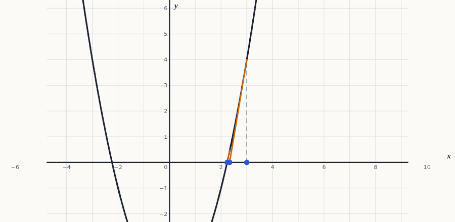
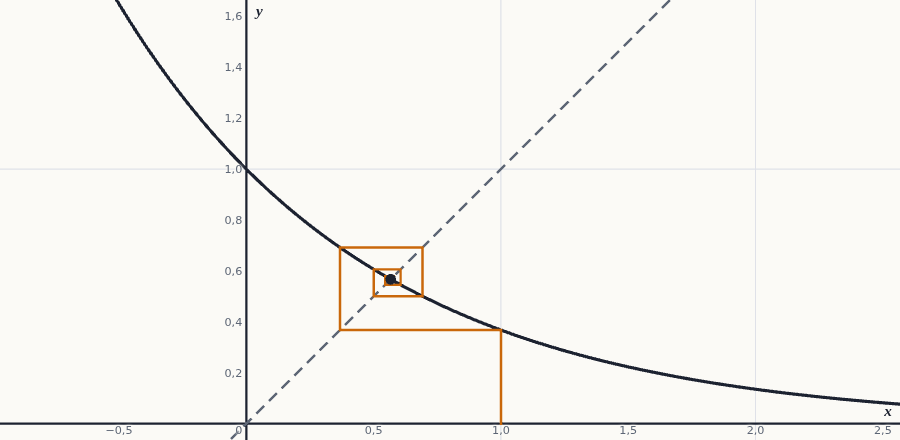

Dos formas de resolver ecuaciones que no se pueden resolver «con fórmulas»: seguir la tangente hasta que corte el eje (Newton) y aplicar una y otra vez la misma función hasta que el resultado deje de moverse (punto fijo). Aprenderás a calcular, a justificar que el método funciona y a decidir cuántas iteraciones hacen falta.
Libro oficial: Cálculo para Ingenieros, §2.4 (pp. 86-93; Ej. 2.18 en p. 94)Ejercicios: E Ej. 2.34–2.38 (pp. 72-76)⏱ ~5 h de estudio
U oficial
S Stewart
L Larson
E ejercicios
P propio
X exámenes
— pasa el ratón (o toca) por cada etiqueta para ver libro y página; en pantallas anchas aparecen en el margen derecho. Decimales con punto, como en E.
La idea del tema en una frase
Casi ninguna ecuación $f(x)=0$ se puede resolver de forma exacta. Este tema enseña dos algoritmos que fabrican una sucesión $x_0,x_1,x_2,\dots$ cuyos términos se acercan a la solución. Newton es muy rápido pero no tiene garantía; el punto fijo es más lento pero, si se comprueban unas hipótesis, sí la tiene (y además te dice cuántas iteraciones bastan).
Si solo tienes un rato, llévate esto. El resto de la página lo desarrolla con ejemplos y ejercicios.
Método en 4 pasos
Lee qué te piden. «Realiza $n$ iteraciones», «hasta que el error sea menor que…», «comprueba que converge» o «cuántas iteraciones garantizan error menor que $\varepsilon$»: cada frase es una cuenta distinta (apartado 3).
Ponlo en forma. Newton: la ecuación como $f(x)=0$, raíz localizada con Bolzano y $x_0$ cercano. Punto fijo: la ecuación como $x=g(x)$.
Itera con tabla, guardando todas las cifras (en Newton, simplifica antes $x-\frac{f}{f'}$).
Justifica si te lo piden: (H0) $g$ continua, (H1) $g([a,b])\subset[a,b]$, (H2) $|g'|\le k<1$; y la cota $\frac{k^n}{1-k}(b-a)$. Al despejar $n$, la desigualdad se invierte con $\ln k<0$ y se toma el primer natural.
Qué hago según el tipo
¿«Realiza $n$ iteraciones»? $\to$ fórmula y tabla hasta $x_n$.
¿«Hasta que $\varepsilon_r<$ tol»? $\to$ Newton con una columna $\varepsilon_r$; paro en la primera fila que cumple.
¿«Comprueba que converge en $[a,b]$»? $\to$ Teorema 2.2: tres hipótesis, una línea cada una.
Cota del error y número de iteraciones garantizadas.
$|x_n-\tilde x|<\dfrac{b-a}{2^n}$
Bisección: iteraciones para un error dado.
Qué cae
En los exámenes resueltos suele ser una pregunta corta de 1 punto (dos iteraciones de Newton, cinco de punto fijo, nº de pasos de bisección) o un ejercicio largo que añade comprobar el Teorema 2.2 y acotar el error. En el libro de ejercicios son E 2.34-2.38. Tabla por tipo: pestaña Examen.
U pp.88-92P
Camino de estudio: elige tu nivel
Empieza por «Mínimo»; luego «Completo» y, para nota alta, «Reto». Marca cada ejercicio al terminarlo.
La fórmula de Newton (apartado 1), los Teoremas 2.2 y 2.3 (apartado 2) y el mapa de decisión (apartado 3).
Un ejercicio de cada tipo:
E 2.34 (Newton, $n$ iteraciones), Examen 2 (Newton con $e^x$), E 2.36 (error relativo), Examen 3 (punto fijo, iterar), E 2.38 (hipótesis del Teorema 2.2), E 2.37 (nº de iteraciones), Examen 5 (completo).
Derivar funciones elementales y saber que $f'(a)$ es la pendiente de la recta tangente en $(a,f(a))$. Si falla esto, repasa el Curso 0. U p.86
Acotar una expresión (por ejemplo «$e^{-x}\le e^{-0.1}$ si $x\ge0.1$»). Es la destreza clave del punto fijo; el propio U la pide. U p.86
Teorema de Bolzano: si $f$ es continua en $[a,b]$ y $f(a)f(b)<0$, hay una raíz en $(a,b)$. Sirve para saber dónde empezar. U p.52
Método de bisección, como término de comparación (error $<\frac{b-a}{2^n}$). U pp.53-55
Sucesiones convergentes y límites (§1.2) y valor absoluto (§1.1).
Mapa del tema: qué se pide en los ejercicios y en el examen
Los cinco ejercicios de E son de este tipo: (a) hacer $n$ iteraciones de Newton para aproximar un número o una raíz (2.34, 2.35, 2.36); (b) comprobar las hipótesis del Teorema 2.2 y hacer iteraciones del punto fijo (2.38); (c) calcular con el Teorema 2.3 cuántas iteraciones garantizan un error dado (2.37). E pp.72-76
1Método de Newton U pp.86-90
Lo que vas a aprender. a resolver $f(x)=0$ siguiendo tangentes: la fórmula de Newton, cómo decidir cuándo parar y cuándo el método falla.
La idea: sustituir la curva por su tangente
Qué quieres. Un $x$ con $f(x)=0$: el punto donde la gráfica cruza el eje $x$. Casi nunca se puede despejar.
Qué haces. Partes de una estimación $x_0$ (aunque sea mala). En $x_0$ conoces la altura $f(x_0)$ y la pendiente $f'(x_0)$, es decir, la recta tangente, que cerca de $x_0$ casi coincide con la curva. Una recta sí sabes dónde corta al eje: ese corte es $x_1$, normalmente más cerca de la raíz. Repites desde $x_1$. Es como bajar una cuesta siguiendo su inclinación hasta el nivel del suelo: si la cuesta es casi recta, llegas casi exacto.
U pp.86-87S p.339L p.225

Interactivo propio. Por defecto es el ejemplo de $\sqrt5$ de abajo ($f(x)=x^2-5$, $x_0=3$): cada tangente (naranja) corta al eje $x$ en la siguiente aproximación; en la lectura «Fórmula» ves el último paso con números. Elige la función y $x_0$ y aumenta los pasos. P
De la idea a la fórmula
Método de Newton (algoritmo)
Hipótesis. $f$ derivable en un intervalo que contiene a la raíz $\tilde x$ que se busca (y que, en cada paso, $f'(x_n)\neq0$).
Datos. Una aproximación inicial $x_0$ cercana a la raíz.
(La derivada $f'(x_n)$ es la pendiente de la tangente en $(x_n,f(x_n))$, y por eso «da» el paso siguiente.) También se llama método de Newton-Raphson o de Newton-Fourier (U p.86).
U p.88L p.225S p.339
Ampliación: cómo se llega a la fórmula, paso a paso
Cómo se llega a la fórmula, paso a paso
Punto de partida. Tienes $x_n$. Ahí la curva está a altura $f(x_n)$ y tiene pendiente $f'(x_n)$ (la derivada es la pendiente de la tangente).
Tangente en ese punto. Es la recta que pasa por $(x_n,f(x_n))$ con pendiente $f'(x_n)$:
$$y=f(x_n)+f'(x_n)\,(x-x_n).$$
Léela así: «empiezo a altura $f(x_n)$ y, por cada unidad que me muevo a la derecha de $x_n$, subo $f'(x_n)$».
Dónde corta al eje $x$. Cortar al eje significa $y=0$. Ese corte es el $x$ de la nueva estimación, $x=x_{n+1}$:
$$0=f(x_n)+f'(x_n)\,(x_{n+1}-x_n).$$
Despejar $x_{n+1}$. Pasa $f(x_n)$ al otro lado, divide entre $f'(x_n)$ (por eso se necesita $f'(x_n)\neq0$) y suma $x_n$:
$$f'(x_n)\,(x_{n+1}-x_n)=-f(x_n)\;\Longrightarrow\;x_{n+1}-x_n=-\frac{f(x_n)}{f'(x_n)}\;\Longrightarrow\;x_{n+1}=x_n-\frac{f(x_n)}{f'(x_n)}.$$
U pp.87-88
Cómo leer la fórmula: «estimación nueva = actual − altura / pendiente»
El cociente $\dfrac{f(x_n)}{f'(x_n)}=\dfrac{\text{altura}}{\text{pendiente}}$ es la distancia horizontal que hay que andar por la tangente hasta llegar a altura $0$ (si subes $m$ por unidad y debes cubrir $h$, te mueves $h/m$). La fórmula es «donde estoy, menos lo que me falta para llegar al eje».
Si $f(x_n)$ y $f'(x_n)$ tienen el mismo signo (curva por encima del eje y subiendo), el cociente es positivo y vas hacia la izquierda.
Pendiente grande (curva empinada) ⇒ paso corto; pendiente pequeña (casi plana) ⇒ paso largo, y con pendiente $0$ no hay paso.
Con $f'(x_n)=0$ la tangente es horizontal y no corta al eje: hay que cambiar $x_0$. Cuando $f(x_n)\approx0$ el paso es casi $0$: se frena solo al llegar a la raíz.
P
Un paso completo con números: $\sqrt5$ como raíz de $x^2-5=0$, $x_0=3$
$f(x)=x^2-5$, $f'(x)=2x$. En $x_0=3$: altura $f(3)=4$, pendiente $f'(3)=6$.
Tangente: $y=4+6(x-3)$. Se anula cuando $6(x-3)=-4$, o sea $x-3=-\frac46$.
$x_1=3-\dfrac{4}{6}=\dfrac73\approx2.3333$. (Es justo la fórmula: $x_0-f(x_0)/f'(x_0)$.)
Repetimos en $x_1$: $f(\frac73)=\frac{49}{9}-5=\frac49$, $f'(\frac73)=\frac{14}3$, así que $x_2=\frac73-\frac{4/9}{14/3}=\frac73-\frac2{21}=\frac{47}{21}\approx2.2381$.
Con $\sqrt5=2.2360679\ldots$: el error baja de $0.76$ ($x_0$) a $0.097$ ($x_1$) y a $0.0020$ ($x_2$): en dos pasos, 2 decimales correctos. Es el interactivo de arriba con sus valores por defecto.
P
Ejemplo 2.15 de U: $\sqrt[4]5$ como raíz de $x^4-5$
Con $x_0=2$: $f(2)=11$ (lejos de ser solución). $x_1=2-\frac{11}{32}=\frac{53}{32}\approx1.6563$.
Siguiendo: $x_2\approx1.5173$, $x_3\approx1.4958$. El error $|x_n-\sqrt[4]5|$ va de $0.505$ a $0.161$, $0.0220$ y $0.00045$ (con $\sqrt[4]5=1.495349\ldots$).
Los errores $10^{-1}\to10^{-2}\to10^{-4}$ van elevándose al cuadrado (ver «Velocidad», más abajo).
U p.88
Error típico: aplicar Newton sin haber escrito «$f(x)=0$»
Newton resuelve ecuaciones de la forma $f(x)=0$. Para $\sqrt5$ hay que decir «$\sqrt5$ es la raíz positiva de $x^2-5=0$» y tomar $f(x)=x^2-5$. Aplicar la fórmula a «$x=\sqrt5$» no significa nada. Y si la ecuación es $e^{-x}=x$, hay que pasarla a $e^{-x}-x=0$ antes de derivar.
Si converge, converge a una raíz
La sucesión de Newton, si converge, converge a una solución
U lo comprueba para $x^4-5$ (Ejemplo 2.16, tomando límites en la iteración). En general: si $f$ y $f'$ son continuas, $x_n\to\tilde x$ y $f'(\tilde x)\neq0$, al tomar límites en $x_{n+1}=x_n-f(x_n)/f'(x_n)$ queda $\tilde x=\tilde x-f(\tilde x)/f'(\tilde x)$, es decir, $f(\tilde x)=0$. Ojo: esto no dice que la sucesión converja; solo que, si lo hace, el límite es una raíz.
U p.89L p.227P
Cuándo parar: los errores aproximados
Error absoluto y relativo aproximados; criterios de parada
No conocemos la solución exacta $\tilde x$ (por eso usamos un método numérico), así que medimos cuánto cambia la sucesión en el último paso:
$$\varepsilon_a=|x_n-x_{n-1}|,\qquad \varepsilon_r=\frac{|x_n-x_{n-1}|}{|x_n|}.$$
Se para cuando $\varepsilon_r$ (o $\varepsilon_a$) es menor que una tolerancia dada. Otro criterio, muy conveniente al programar, es un número máximo de iteraciones fijado de antemano, para no entrar en un proceso infinito.
Error típico: creer que $\varepsilon_r$ es el error verdadero. Solo mide «cuánto me he movido»: si el método va despacio, puede ser pequeño con la solución lejos; en Newton suele sobreestimar el error real, y con pocos decimales puede salir $\varepsilon_r=0$ sin que el error sea nulo (Ejercicio 2.36).
Se toman valores absolutos porque normalmente da igual si el error es por defecto o por exceso (no siempre: por ejemplo, la velocidad mínima de despegue de un avión, donde un error por defecto significa que no despega y uno por exceso solo gasta más combustible, p.89); se divide entre $|x_n|$ porque un error de $10$ céntimos no pesa igual en una caña que en un coche. Rigurosamente habría que usar el error relativo exacto (con $\tilde x$), pero es imposible, y se supone que $\tilde x$ está cerca de $x_n$.
U pp.89-90L p.225S p.340
¿Es infalible? No
Cuándo falla Newton
$f'(x_n)=0$ para algún $n$: no se puede dividir (tangente horizontal). Solución: elegir otro $x_0$.
Ciclos: la sucesión salta entre dos puntos y no converge (U p.89).
Mal punto de partida: la tangente puede llevarte lejos de la raíz o fuera del dominio de $f$ (S, figura 4).
Ejemplo de ciclo (L ej. 22, p.229). $f(x)=x^3-2x+2$, $x_0=0$: salen $0,1,0,1,\dots$ (detalle en P3).
Ejemplo de divergencia (L Ejemplo 3, p.227). $f(x)=\sqrt[3]{x}$ (no derivable en su raíz $0$). Aquí $x_{n+1}=x_n-\frac{x_n^{1/3}}{\frac13x_n^{-2/3}}=x_n-3x_n=-2x_n$: con $x_0=0.1$ salen $-0.2,\ 0.4,\ -0.8,\dots$ que se alejan del $0$ en cada paso.
Moraleja: antes de elegir $x_0$, localiza la raíz (Bolzano o una gráfica).
U p.89L pp.227,229S pp.340,343
Ampliación: una condición suficiente de convergencia
Una condición suficiente de convergencia
Hipótesis. $f$ con derivada segunda y $f'\neq0$ en un intervalo abierto $I$ que contiene al cero $c$, y punto inicial $x_0\in I$ tal que las iteraciones permanecen en $I$ (por ejemplo, si $I$ es simétrico respecto de $c$).
Conclusión (Larson). Si $\left|\dfrac{f(x)\,f''(x)}{[f'(x)]^2}\right|<1$ para todo $x\in I$, el método de Newton converge al cero. Para $f(x)=x^2-2$ el cociente es $\frac{x^2-2}{2x^2}=\frac12-\frac1{x^2}$, que en $(1,3)$ toma valores en $(-\frac12,\frac7{18})$: su valor absoluto es $<1$ y converge. Para $f(x)=\sqrt[3]x$ el cociente vale $-2$ en todo punto ($|{\cdot}|=2$): no se cumple, y en efecto diverge.
Es solo suficiente. Sirve como criterio de sentido común: Newton va bien si $f$ no se «curva» demasiado respecto a lo empinada que es.
L p.228
Velocidad: por qué Newton es tan rápido (a veces)
Los decimales correctos se duplican
Con una raíz simple ($f'(\tilde x)\ne0$), el error nuevo es aproximadamente el cuadrado del anterior: $10^{-2}\to10^{-4}\to10^{-8}\to10^{-16}$ (convergencia cuadrática). Con una raíz doble ($f'(\tilde x)=0$, la curva «toca» el eje sin cruzarlo) el error solo se reduce a la mitad en cada paso, y Newton no es más rápido que la bisección (Ejercicio 2.35). La razón se ve con álgebra en el paso 6 del Ejercicio 2.34.
P
Truco: simplifica $x-\frac{f}{f'}$ antes de iterar
Casi siempre sale una expresión más sencilla que se calcula mejor: para $x^2-a$ es $\tfrac12\!\left(x+\tfrac ax\right)$ (regla de Herón, la media entre $x$ y $a/x$); para $x^m-a$ es $\frac{(m-1)x^m+a}{m\,x^{m-1}}$; para $e^{-x}-x$ es $\frac{x+1}{1+e^{x}}$.
L p.229S p.342
2Método de punto fijo U pp.90-94
Lo que vas a aprender. a repetir $x_{n+1}=g(x_n)$ y, antes de fiarte, comprobar las tres hipótesis del Teorema 2.2; con la cota del Teorema 2.3 sabrás cuántas iteraciones bastan.
Idea intuitiva: la calculadora que pulsa «cos» sin parar
Pon la calculadora en radianes, escribe cualquier número y pulsa la tecla cos una y otra vez. Los resultados se estabilizan en $0.7390\ldots$ ¿Por qué? Ese número $\tilde x$ cumple $\cos\tilde x=\tilde x$: la función lo deja quieto. Un punto que una función no mueve es un punto fijo. Si repetir la función te acerca cada vez más a un punto, ese punto es la solución de «$x=g(x)$».
P
Definición 2.4 (punto fijo)
Dada una función $g$, $\tilde x$ es un punto fijo de $g$ si $g(\tilde x)=\tilde x$. Gráficamente: los puntos donde la gráfica de $g$ corta a la recta $y=x$. Calcular puntos fijos = resolver la ecuación $x=g(x)$.
U p.90
Método de punto fijo
Datos. $g$ continua y una primera aproximación $x_0$. Iteración (ecuación (2.3) de U):
$$x_{n+1}=g(x_n),\qquad n=0,1,2,\dots$$
U p.90
Si converge, converge a un punto fijo
Hipótesis. $g$ continua y $x_n\to a$. Conclusión. $a=g(a)$, pues $\lim_{n\to\infty} x_n=\lim_{n\to\infty} g(x_{n-1})=g(\lim_{n\to\infty} x_{n-1})$ (la continuidad de $g$ permite meter el límite dentro). De nuevo: si converge. Falta una condición que lo garantice.
U p.91
Cuándo funciona: los teoremas 2.2 y 2.3
Teorema 2.2 (existencia, unicidad y convergencia)
Hipótesis (las tres, a la vez):
(H0) $g$ continua en $[a,b]$. U la supone desde que presenta el método (p.90: «$g$ es una función continua»); hay que tenerla presente porque (H2) solo habla del abierto $(a,b)$.
(H1) $g:[a,b]\to[a,b]$: la función lleva el intervalo cerrado dentro de sí mismo. Es decir, $g$ está definida en $[a,b]$ y $g(x)\in[a,b]$ para todo $x\in[a,b]$.
(H2) Existe $k\in[0,1)$ con $|g'(x)|\le k$ para todo $x\in(a,b)$. (Implica que $g$ es derivable en $(a,b)$, pero no dice nada de los extremos ni de la continuidad en ellos.)
Conclusión. (1) $g$ tiene un único punto fijo $\tilde x$ en $[a,b]$; (2) para cualquier $x_0\in[a,b]$ la sucesión $x_{n+1}=g(x_n)$ converge a $\tilde x$.
U p.91
Teorema 2.3 (cota del error)
En las condiciones del Teorema 2.2, si $\tilde x$ es el único punto fijo de $g$ en $[a,b]$ y $k$ es la cota de $|g'|$ (con $k>0$: si $k=0$, $g$ es constante, $x_1=\tilde x$, la desigualdad estricta $0<0$ falla y $\ln k$ no existe):
$$|x_n-\tilde x|<\frac{k^n}{1-k}\,(b-a).$$
Número de iteraciones. Para garantizar error menor que $\varepsilon$ hay que tomar el menor natural $n$ tal que $\dfrac{k^n}{1-k}(b-a)<\varepsilon$.
U pp.91-92
Error típico: comprobar solo $|g'|<1$
Hacen falta todas las hipótesis. Si $g$ no lleva $[a,b]$ en sí mismo, una iteración puede salir del intervalo y ya no vale la cota de $g'$ para el paso siguiente. Además, $k$ debe ser un número que de verdad acote a $|g'|$ en todo $(a,b)$: se toma el máximo (o un número mayor), nunca el mínimo.
Y (H0) no sobra. Sea $g(0)=1$ y $g(x)=x/2$ para $x\in(0,1]$. Lleva $[0,1]$ en $[0,1]$ y $|g'(x)|=\frac12$ en $(0,1)$, pero no tiene ningún punto fijo ($g(0)=1\neq0$ y $x/2=x$ solo si $x=0$): (H1) y (H2) se cumplen y falla la continuidad en $0$. Casi siempre $g$ es una función elemental continua en su dominio y (H0) se comprueba diciéndolo.
Ampliación: por qué funciona el punto fijo («contracciones»)
Por qué funciona (explicación propia: «contracciones»)
Si $|g'|\le k<1$, por el teorema del valor medio (U §2.5.3, p. 96, que viene después de este tema) $|g(x)-g(y)|\le k|x-y|$: la función acerca los puntos (es una contracción). Entonces:
Existe: $h(x)=g(x)-x$ es continua (H0) y cumple $h(a)\ge0\ge h(b)$ (porque $g(x)\in[a,b]$). Si $h(a)=0$ o $h(b)=0$, ese extremo ya es un punto fijo; si no, $h(a)>0>h(b)$ y Bolzano da un cero.
Es único: si hubiera dos, $|\tilde x-\tilde y|=|g(\tilde x)-g(\tilde y)|\le k|\tilde x-\tilde y|$ con $k<1$ obliga a $\tilde x=\tilde y$.
Converge: $|x_n-\tilde x|=|g(x_{n-1})-g(\tilde x)|\le k|x_{n-1}-\tilde x|\le\dots\le k^n|x_0-\tilde x|\le k^n(b-a)\to0$. Como $k^n(b-a)<\frac{k^n}{1-k}(b-a)$, sale la cota de U.
Cada paso reduce el error como mucho a una fracción $k$: es una convergencia lineal (comparada con la cuadrática de Newton). Cuanto más cerca de $1$ esté $k$, más lenta.
P

Interactivo propio. Por defecto es $g(x)=e^{-x}$ con $x_0=1$ (Ejercicio 2.38). La escalera (naranja) va en vertical hasta la curva $y=g(x)$ y en horizontal hasta la recta $y=x$: cada escalón es una iteración. Con la tercera función, mueve $m=g'(x^*)$: si $|m|<1$ la escalera se cierra sobre el punto fijo (monótona si $m>0$, en espiral si $m<0$); si $|m|>1$ se aleja. P
Ejemplo 2.17 de U: $\tfrac12\cos x=x$
a) Comprobar convergencia para todo $x_0\in[0,\frac\pi2]$. Es buscar puntos fijos de $g(x)=\frac12\cos x$ en $[a,b]=[0,\frac\pi2]$.
(H0) $g(x)=\frac12\cos x$ es continua en $\mathbb R$.
(H1) $g:[0,\frac\pi2]\to[0,\frac\pi2]$: como $\cos x\in[0,1]$ para $x\in[-\frac\pi2,\frac\pi2]$ y $[0,\frac\pi2]$ está dentro, $0\le\frac12\cos x\le\frac12<\frac\pi2$.
Por el Teorema 2.2: un único punto fijo y convergencia para cualquier $x_0$ del intervalo.
b) Cuatro iteraciones con $x_0=1$ (radianes): $x_1=0.2701$, $x_2=0.4819$, $x_3=0.4430$, $x_4=0.4517$. (U imprime $x_3=0.4430$ por redondear en cada paso; con todas las cifras $x_3=0.443066\ldots$, que redondea a $0.4431$.)
c) Error de $x_4$ (Teorema 2.3): $|x_4-\tilde x|<\dfrac{(1/2)^4}{1-1/2}\cdot\dfrac\pi2=\dfrac\pi{16}\approx0.1963$.
d) Iteraciones para error $<0.01$: $\dfrac{(1/2)^n}{1/2}\cdot\dfrac\pi2<0.01\iff\left(\tfrac12\right)^n<\dfrac{0.01}{\pi}\iff n>\dfrac{\ln(0.01/\pi)}{\ln(1/2)}\approx8.2953$ (se invierte la desigualdad al dividir entre $\ln\frac12<0$). Hacen falta 9 iteraciones.
U pp.92-93
De $f(x)=0$ a $x=g(x)$: la $g$ no es única
Cómo se elige $g$
Para resolver $f(x)=0$ con punto fijo hay que despejar una ecuación equivalente $x=g(x)$; hay infinitas maneras. La más sencilla es $g(x)=f(x)+x$. Ejemplo 2.18 de U con $x^3-x=0$: sumando $x$ sale $g(x)=x^3$; con raíces cúbicas, $g(x)=\sqrt[3]x$; dividiendo por $x^2$ (buscando raíz no nula), $g(x)=\frac1x$. No todas sirven: hay que elegir una con $|g'|<1$ cerca de la raíz (ver Ejemplo propio P6).
U pp.93-94
Ampliación: Newton es un punto fijo
Newton es un punto fijo
El método de Newton es el método de punto fijo con $g(x)=x-\dfrac{f(x)}{f'(x)}$: los puntos fijos de esa $g$ son exactamente los ceros de $f$ (donde $f'\ne0$). Además $g'(\tilde x)=\dfrac{f(\tilde x)f''(\tilde x)}{[f'(\tilde x)]^2}=0$ en una raíz simple, es decir, «$k=0$»; por eso Newton es tan rápido cerca de la raíz. Fíjate en que es justo el cociente de la condición de Larson.
P
3Mapa de decisión: ¿Newton, punto fijo o bisección? ¿Cuántas iteraciones? PU pp.54,89-92
Lo que vas a aprender. qué método y qué cuenta corresponde a cada frase del enunciado («realiza $n$ iteraciones», «hasta que el error sea menor que…», «garantiza error menor que…», «comprueba que converge»).
Léelo de arriba abajo: en cada pregunta, «no» baja y «sí» te lleva a la acción de la derecha. Lo primero es leer bien qué te piden: casi todos los errores de este tema vienen de mezclar los casos.
Ver la tabla con el detalle de cada caso
Si el enunciado dice…
Método
Cuántas iteraciones
Fórmula / criterio
Ejemplo
«realiza $n$ iteraciones»
Newton o punto fijo
exactamente $n$
tabla $x_0,x_1,\dots,x_n$; el resultado es $x_n$
E 2.34 (4), 2.35 (3), 2.36 (3), 2.38 (4)
«hasta que el error relativo aproximado sea menor que…»
Newton (o punto fijo)
no se sabe a priori: se para cuando se cumple
$\varepsilon_r=\dfrac{|x_n-x_{n-1}|}{|x_n|}<\text{tol}$ (más un tope máximo)
P2 (4 pasos para $10^{-6}$)
«¿cuántas iteraciones garantizan error $<\varepsilon$?» con $g:[a,b]\to[a,b]$ y $|g'|\le k$
punto fijo
el menor natural $n$ con $\dfrac{k^n}{1-k}(b-a)<\varepsilon$
$n>\dfrac{\ln\big(\varepsilon(1-k)/(b-a)\big)}{\ln k}$ (al dividir entre $\ln k<0$ se invierte la desigualdad)
E 2.37: 21 con $k=0.8$; 3 con $k=0.2$. U 2.17 d: 9
«¿cuántas iteraciones para error $<\varepsilon$?» con cambio de signo en $[a,b]$
bisección
el menor $n$ con $\dfrac{b-a}{2^n}<\varepsilon$
$n>\log_2\dfrac{b-a}{\varepsilon}$
U Ej. 1.49: $n>3$, luego 4
«¿cuántas iteraciones de Newton garantizan…?»
Newton
U no da fórmula
usar $\varepsilon_r$ como criterio de parada práctico, no como garantía
—
Caso «garantizar error $<\varepsilon$» (punto fijo), en cuatro pasos
Identifica $g$, $[a,b]$ y $k$ y comprueba (H1) y (H2) antes; si no se cumplen, el Teorema 2.3 no dice nada.
Sustituye en $\dfrac{k^n}{1-k}(b-a)<\varepsilon$, aísla $k^n$ y toma $\ln$; al dividir entre $\ln k<0$ la desigualdad se invierte.
Toma el primer natural estrictamente mayor que el resultado (si sale $20.64$, $n=21$; si saliera exactamente $2$, $n=3$).
Comprueba con $n-1$ (no basta) y $n$ (basta). Ejemplos resueltos: Ej. 2.37 (21 y 3 iteraciones), U Ej. 2.17 d (9), Ej. 2.38 (76) y P4 (11).
Cota garantizada ≠ iteraciones necesarias
El Teorema 2.3 da una garantía, no una estimación ajustada: con $k$ cerca de $1$ es muy pesimista (Ejercicio 2.38: garantiza $76$ iteraciones, la tabla real basta con $7$). Y en Newton, $\varepsilon_r$ es solo una estimación.
4Comparación de los tres métodos U pp.86-87P
Bisección (U §1.4)
Punto fijo
Newton
Qué necesita
$f$ continua y cambio de signo en $[a,b]$ (Bolzano)
$g$ continua, $g:[a,b]\to[a,b]$ y $|g'|\le k<1$ en $(a,b)$
$f$ derivable, $f'(x_n)\ne0$ y un buen $x_0$
Garantía a priori
siempre converge; error $<\frac{b-a}{2^n}$
sí, Teorema 2.3
ninguna (solo condición suficiente en L)
Velocidad
lenta: el error se divide entre 2
lineal: el error se multiplica por $\approx|g'(\tilde x)|$
cuadrática (raíz simple); lineal si la raíz es doble
Punto débil
no sirve si $f$ no cambia de signo (p. ej. $x^2=0$)
elegir bien $g$ (no todas valen)
$f'=0$, ciclos, mal $x_0$
Ventaja de Newton sobre bisección: no hace falta un intervalo con la solución y, cuando converge, es mucho más rápido (U p.87). La comparación de velocidades es explicación propia.
5Practica P
Lo que vas a aprender. a resolver tú solo un ejemplo de cada tipo. Intenta cada uno antes de abrir la pista; empieza por los ★ (los ★★ son ampliación).
Ahora hazlo tú
Antes de iterar, localiza la raíz (Bolzano) y comprueba lo que la fórmula necesita: $f'(x_n)\neq0$ en Newton; $g([a,b])\subset[a,b]$ y $|g'|\le k<1$ en punto fijo. Después, tabla y criterio de parada.
Newton a mano: de la ecuación a la tabla
★ Básico Práctica a1 · dos iteraciones con fracciones P
Comprueba que $x^3+2x-5=0$ tiene una única raíz real, localízala entre dos enteros y haz dos iteraciones de Newton desde $x_0=1$ (con fracciones exactas).
Pista
$f(x)=x^3+2x-5$ tiene $f'(x)=3x^2+2$, que nunca se anula: $f$ es estrictamente creciente (solo puede cortar una vez al eje). Mira el signo de $f(1)$ y $f(2)$ y aplica $x_{n+1}=x_n-\frac{f(x_n)}{f'(x_n)}$.
Ver solución
Localizar: $f(1)=-2<0$ y $f(2)=7>0$, y $f$ es continua: por Bolzano (U §1.4, p.52) hay una raíz en $(1,2)$.
Única: $f'(x)=3x^2+2\ge2>0$, luego $f$ es estrictamente creciente y no puede anularse dos veces. Además, $f'(x_n)\neq0$ siempre: la fórmula de Newton nunca divide entre $0$.
Primera iteración (U §2.4.2, p.88): $f(1)=-2$, $f'(1)=5$, así que $x_1=1-\frac{-2}{5}=\frac75$.
Segunda iteración: $f\!\left(\frac75\right)=\frac{343}{125}+\frac{14}5-5=\frac{68}{125}$ y $f'\!\left(\frac75\right)=\frac{147}{25}+2=\frac{197}{25}$. Entonces $$x_2=\frac75-\frac{68/125}{197/25}=\frac75-\frac{68}{985}=\frac{1311}{985}.$$
Comprobación: la raíz es $1.328269\ldots$; $x_1=1.4$ se pasa en $0.07$ y $x_2\approx1.33096$ ya solo en $0.0027$.
★★ Medio Práctica a2 · calcular $\frac17$ sin dividir P
Aplica Newton a $f(x)=\dfrac1x-7$ y simplifica la iteración: debe quedar sin ninguna división. Haz tres iteraciones desde $x_0=0.1$.
Pista
La raíz de $f$ es $\frac17$. Con $f'(x)=-\frac1{x^2}$, el cociente $\frac{f(x)}{f'(x)}$ se convierte en un producto: multiplica arriba y abajo por $-x^2$.
Ver solución
Función y derivada: $f(x)=\frac1x-7$ (definida para $x\neq0$), $f'(x)=-\frac1{x^2}\neq0$.
Simplificar (U §2.4.2, p.88): $$x_{n+1}=x_n-\frac{\frac1{x_n}-7}{-\frac1{x_n^2}}=x_n+x_n^2\Big(\frac1{x_n}-7\Big)=x_n+x_n-7x_n^2=x_n(2-7x_n).$$ Solo hay productos y restas: así calculaban los primeros ordenadores los inversos.
Comprobación: $\frac17=0.142857\ldots$; los errores son $1.3\times10^{-2}$, $1.2\times10^{-3}$ y $9.4\times10^{-6}$.
Por qué va tan rápido (álgebra pura): $\frac17-x_{n+1}=7x_n^2-2x_n+\frac17=7\big(x_n-\frac17\big)^2$. El error nuevo es $7$ veces el cuadrado del anterior: $7\cdot(0.0129)^2\approx0.0012$. Se ve también que hay que empezar con $0<x_0<\frac27$: si no, $|7x_0-1|\ge1$ y el error no disminuye.
★ Básico Práctica b1 · parar con $\varepsilon_r<10^{-3}$ P
Resuelve $x^4-x-10=0$ en $[1,2]$ con Newton desde $x_0=2$, parando en la primera iteración con error relativo aproximado $\varepsilon_r<10^{-3}$.
Pista
Tabla con columnas $n$, $x_n$ y $\varepsilon_r=\frac{|x_n-x_{n-1}|}{|x_n|}$. Se calcula $\varepsilon_r$ a partir de $n=1$ y se para en cuanto baja de $10^{-3}$.
Ver solución
Hay raíz y se puede dividir: $f(1)=-10<0$, $f(2)=4>0$ (Bolzano, U §1.4, p.52); $f'(x)=4x^3-1\ge3$ en $[1,2]$.
Iteración (U §2.4.2, p.88): $x_{n+1}=x_n-\dfrac{x_n^4-x_n-10}{4x_n^3-1}$. Desde $x_0=2$: $x_1=2-\frac4{31}=\frac{58}{31}\approx1.870968$.
Tabla con el criterio de parada (U pp.89-90):
$n$
$x_n$
$\varepsilon_r$
0
2
—
1
1.870968
$6.9\times10^{-2}$
2
1.855781
$8.2\times10^{-3}$
3
1.855585
$1.06\times10^{-4}$
Parar: en $n=2$ todavía $\varepsilon_r=0.0082\ge10^{-3}$; en $n=3$, $\varepsilon_r=0.000106<10^{-3}$.
Comprobación: la raíz es $1.8555845\ldots$; $x_3$ ya acierta en $7$ cifras. $\varepsilon_r$ solo mide «cuánto me he movido» y aquí sobreestima mucho el error real (U pp.89-90).
Resultado: se para en $n=3$, $x_3\approx1.85558$
★★ Medio Práctica b2 · $x=2\operatorname{sen}x$: buen y mal punto de partida P
La ecuación $x=2\operatorname{sen}x$ tiene una raíz en $(1.5,2)$. (a) Aplica Newton desde $x_0=2$ hasta $\varepsilon_r<10^{-5}$. (b) ¿Qué pasa si se empieza en $x_0=1$? Explícalo con $f'(1)$.
Pista
$f(x)=x-2\operatorname{sen}x$, $f'(x)=1-2\cos x$. En (b) calcula $f'(1)$: si es casi $0$, la tangente es casi horizontal y corta al eje muy lejos.
Ver solución
Localizar: $f(1.5)\approx-0.495<0$ y $f(2)\approx0.181>0$ (Bolzano, U p.52). En $[1.5,2]$, $\cos x\le\cos1.5\approx0.071$, así que $f'(x)\ge0.85>0$: se puede dividir.
(a) Iterar (U §2.4.2, p.88) con $x_{n+1}=x_n-\dfrac{x_n-2\operatorname{sen}x_n}{1-2\cos x_n}$: $x_1\approx1.900996$ ($\varepsilon_r\approx5.2\times10^{-2}$), $x_2\approx1.895512$ ($2.9\times10^{-3}$), $x_3\approx1.895494$ ($9.2\times10^{-6}$).
Parar (U pp.89-90): el primer $\varepsilon_r$ menor que $10^{-5}$ es el de $n=3$.
(b) Desde $x_0=1$: $f(1)\approx-0.683$ y $f'(1)=1-2\cos1\approx-0.081$, casi $0$. Entonces $x_1=1-\frac{-0.683}{-0.081}\approx-7.47$: la tangente casi horizontal manda la iteración muy lejos, fuera del intervalo donde estaba la raíz.
Moraleja: no basta con $f'(x_0)\neq0$; si $f'(x_0)$ es muy pequeña, el paso $\frac{f(x_0)}{f'(x_0)}$ es enorme (U p.89, fallos de Newton). Localiza la raíz y parte de un punto donde la tangente sea «empinada».
Resultado: $x_3\approx1.895494$ (se para en $n=3$); desde $x_0=1$ sale $x_1\approx-7.47$
Cuando Newton falla: tangente horizontal, saltos y divergencia
★ Básico Práctica c1 · una tangente horizontal P
Para $f(x)=x^2-4x+3$, explica por qué Newton no puede arrancar en $x_0=2$ y haz tres iteraciones desde $x_0=0$. ¿A qué raíz se acercan?
Pista
Calcula $f'(2)$. Las raíces se ven factorizando: $x^2-4x+3=(x-1)(x-3)$.
Ver solución
Por qué no en $x_0=2$: $f'(x)=2x-4$ y $f'(2)=0$. La fórmula $x_1=x_0-\frac{f(x_0)}{f'(x_0)}$ divide entre $0$ (U §2.4.2, p.88): la tangente en el vértice de la parábola es horizontal y nunca corta al eje.
Raíces: $(x-1)(x-3)=0$, es decir $x=1$ y $x=3$.
Desde $x_0=0$: $x_1=0-\frac{3}{-4}=\frac34$; $x_2=\frac34-\frac{9/16}{-5/2}=\frac34+\frac{9}{40}=\frac{39}{40}$; $x_3=\frac{39}{40}-\frac{1/1600}{-1/20}=\frac{3279}{3280}$.
Lectura: los errores respecto a $1$ son $\frac14$, $\frac1{40}$, $\frac1{3280}$: cada uno es, más o menos, el cuadrado del anterior (raíz simple, $f'(1)=-2\neq0$). Se acerca a $1$, la raíz que está del mismo lado del vértice que $x_0$.
★★ Medio Práctica c2 · arcotangente: converge o se dispara P
La única raíz de $f(x)=\operatorname{arctg}x$ es $0$. Escribe la iteración de Newton y aplícala desde $x_0=0.5$ (tres iteraciones) y desde $x_0=1.5$ (tres iteraciones). ¿Qué ocurre en cada caso?
Pista
$f'(x)=\frac1{1+x^2}$, nunca $0$, así que la división siempre se puede hacer. Pero la gráfica se aplana para $|x|$ grande: la tangente desde un punto lejano corta el eje muy al otro lado.
Ver solución
Iteración (U §2.4.2, p.88): $x_{n+1}=x_n-\dfrac{\operatorname{arctg}x_n}{1/(1+x_n^2)}=x_n-(1+x_n^2)\operatorname{arctg}x_n$.
Desde $0.5$: $x_1\approx-0.0796$, $x_2\approx0.000335$, $x_3\approx-2.5\times10^{-11}$. Converge a $0$ alternando de lado, y muy deprisa.
Desde $1.5$: $x_1\approx-1.69$, $x_2\approx2.32$, $x_3\approx-5.11$ (y $x_4\approx32.3$). Cada iterado cae al otro lado y más lejos: la sucesión no converge.
Por qué: en $x=1.5$ la pendiente es $\frac1{3.25}\approx0.31$, pequeña, y la altura $\operatorname{arctg}1.5\approx0.98$ es grande: el paso $\frac{f}{f'}\approx3.19$ es mayor que el doble de $|x_0|$, así que se pasa de largo. Hay un valor frontera ($\approx1.39$) en el que la iteración salta entre dos puntos opuestos sin moverse (un ciclo, U p.89).
Lección: aunque $f$ sea derivable, con $f'\neq0$ y una única raíz, Newton puede divergir si $x_0$ no está cerca (U p.89).
Resultado: desde $0.5$ converge a $0$ ($x_1\approx-0.0796$); desde $1.5$ diverge ($x_1\approx-1.69$, $x_2\approx2.32$, $x_3\approx-5.11$)
Punto fijo: comprobar las hipótesis del Teorema 2.2
★ Básico Práctica d1 · una parábola que no se sale de $[0,1]$ P
Sea $g(x)=\dfrac{x^2+2}{5}$. (a) Comprueba que el método de punto fijo converge para todo $x_0\in[0,1]$. (b) Haz tres iteraciones desde $x_0=0$ y compáralas con el punto fijo exacto. (c) Da la cota del error de $x_3$.
Pista
Teorema 2.2: $g$ continua, $g([0,1])\subset[0,1]$ y $|g'|\le k<1$. Como $g$ es creciente en $[0,1]$, basta mirar $g(0)$ y $g(1)$. El punto fijo exacto sale de la ecuación de segundo grado $x=\frac{x^2+2}5$.
Ver solución
(H0) $g$ es un polinomio: continua.
(H1) $g'(x)=\frac{2x}5\ge0$ en $[0,1]$: $g$ es creciente, así que $g([0,1])=[g(0),g(1)]=\left[\frac25,\frac35\right]\subset[0,1]$.
(H2) $|g'(x)|=\frac{2x}5\le\frac25$ en $(0,1)$: $k=\frac25<1$. Por el Teorema 2.2 (U p.91), hay un único punto fijo en $[0,1]$ y la iteración converge desde cualquier $x_0\in[0,1]$.
(b) Iterar (U (2.3), p.90): $x_1=\frac25=0.4$, $x_2=\frac{0.16+2}5=0.432$, $x_3=\frac{34166}{78125}\approx0.437325$. Exacto: $x=\frac{x^2+2}5\iff x^2-5x+2=0\iff x=\frac{5\pm\sqrt{17}}2$; en $[0,1]$ solo está $\tilde x=\frac{5-\sqrt{17}}2\approx0.438447$ (la otra, $\approx4.56$, queda fuera).
(c) Cota (Teorema 2.3, U pp.91-92): $|x_3-\tilde x|<\frac{(2/5)^3}{1-2/5}\cdot(1-0)=\frac{8/125}{3/5}=\frac8{75}\approx0.107$. El error real es $0.0011$: la cota es una garantía, no una estimación fina.
★★ Medio Práctica d2 · $x=\frac{e^x}3$: el intervalo importa P
Sea $g(x)=\dfrac{e^x}{3}$. (a) Prueba con el Teorema 2.2 que $g$ tiene un único punto fijo en $[0,1]$ y que la iteración converge desde cualquier $x_0\in[0,1]$. (b) ¿Se puede aplicar el teorema en $[0,2]$? (c) ¿Qué ocurre si se empieza en $x_0=1.6$?
Pista
$g$ y $g'=\frac{e^x}3$ son crecientes: los valores extremos están en los bordes del intervalo. En (b), mira $g(2)$ y $g'(2)$; en (c), itera un par de veces.
Ver solución
(a) (H0) $e^x$ es continua. (H1) $g$ es creciente: $g([0,1])=\left[\frac13,\frac e3\right]\approx[0.333,0.906]\subset[0,1]$. (H2) $|g'(x)|=\frac{e^x}3\le\frac e3\approx0.906<1$ en $(0,1)$; $k=\frac e3$. Teorema 2.2 (U p.91): único punto fijo en $[0,1]$, $\tilde x\approx0.6191$, y convergencia desde todo $x_0\in[0,1]$ (desde $x_0=1$: $0.906,\ 0.825,\ 0.761,\dots$).
(b) En $[0,2]$ falla (H1): $g(2)=\frac{e^2}3\approx2.46>2$. También falla (H2): $g'(2)\approx2.46>1$. El teorema no dice nada, y de hecho la conclusión es falsa: $g$ tiene un segundo punto fijo en $[0,2]$, $\approx1.5121$ (Bolzano con $h(x)=g(x)-x$: $h(1)<0<h(2)$, U p.52).
(c) Desde $x_0=1.6$: $1.651,\ 1.737,\ 1.894,\ 2.216,\ 3.056,\dots$ se aleja. Cerca de $1.5121$ la pendiente vale $g'\approx1.51>1$: la iteración agranda la distancia al punto fijo en vez de reducirla.
Lección: el Teorema 2.2 depende del intervalo. Hay que elegir uno donde $g$ «no se salga» y sea contractiva (U p.91); un punto fijo con $|g'|>1$ no se puede alcanzar iterando.
Resultado: en $[0,1]$ se cumple el Teorema 2.2 con $k=\frac e3$ (punto fijo $\approx0.6191$); en $[0,2]$ no ($g(2)\approx2.46$; hay otro punto fijo, $\approx1.5121$)
¿Cuántas iteraciones? La cota del Teorema 2.3
★ Básico Práctica e1 · solo con $k$ y el intervalo P
$g:[2,4]\to[2,4]$ es derivable con $|g'(x)|\le0.6$ en $(2,4)$. ¿Cuántas iteraciones de punto fijo garantizan un error menor que $10^{-2}$?
Pista
No hace falta conocer $g$. Sustituye $k=0.6$, $b-a=2$ y $\varepsilon=0.01$ en $\frac{k^n}{1-k}(b-a)<\varepsilon$, toma logaritmos y recuerda que $\ln0.6<0$.
Ver solución
Hipótesis: $g$ lleva $[2,4]$ en sí mismo y $|g'|\le k=0.6<1$: Teorema 2.2 (U p.91). Vale la cota del Teorema 2.3 (U pp.91-92).
Logaritmos: $n\ln0.6<\ln0.002$; al dividir entre $\ln0.6<0$ la desigualdad se invierte: $n>\dfrac{\ln0.002}{\ln0.6}\approx12.17$.
Primer natural (U p.92): $n=13$. Comprobación: con $n=12$ la cota es $0.0109$ (no basta); con $n=13$, $0.0065<0.01$.
Resultado: $n=13$
★★ Medio Práctica e2 · $\sqrt[3]{x+5}$ con error $<10^{-6}$ P
Para resolver $x^3-x-5=0$ se usa $g(x)=\sqrt[3]{x+5}$ en $[1,2]$. Comprueba las hipótesis del Teorema 2.2, halla la mejor $k$, calcula cuántas iteraciones garantizan error $<10^{-6}$ y haz tres iteraciones desde $x_0=1$.
Pista
$x^3-x-5=0\iff x^3=x+5\iff x=\sqrt[3]{x+5}$. $g$ es creciente y $g'(x)=\frac1{3(x+5)^{2/3}}$ es positiva y decreciente: su máximo en $[1,2]$ está en $x=1$.
Ver solución
Equivalencia: los puntos fijos de $g$ son las raíces de $x^3-x-5$ (Def. 2.4, U p.90; elección de $g$, U p.93).
(H0) y (H1): $g$ es continua y creciente, así que $g([1,2])=[\sqrt[3]6,\sqrt[3]7]\approx[1.817,1.913]\subset[1,2]$.
(H2): $g'(x)=\frac1{3(x+5)^{2/3}}$ decrece (el denominador crece), luego $|g'(x)|\le g'(1)=\frac1{3\cdot6^{2/3}}\approx0.10095=k$. Teorema 2.2 (U p.91): punto fijo único y convergencia.
Iteraciones (Teorema 2.3, U pp.91-92): $\dfrac{k^n}{1-k}\cdot1<10^{-6}\iff n>\dfrac{\ln\big(10^{-6}(1-k)\big)}{\ln k}\approx6.07$, luego $n=7$ (cota con $6$: $1.18\times10^{-6}$; con $7$: $1.19\times10^{-7}$).
Iterar desde $x_0=1$: $x_1=\sqrt[3]6\approx1.817121$, $x_2\approx1.896125$, $x_3\approx1.903422$. La raíz es $1.904161\ldots$: con una $k$ tan pequeña, cada paso gana aproximadamente una cifra.
Resultado: $n=7$; $x_3\approx1.903422$
Antes de iterar: localizar las raíces (Bolzano y bisección)
★ Básico Práctica f1 · tres pasos de bisección P
Para $x^3-2x-5=0$ en $[2,3]$: comprueba que se puede usar bisección, calcula los tres primeros puntos medios y di cuántas iteraciones garantizan un error menor que $10^{-3}$.
Pista
En cada paso te quedas con la mitad donde $f$ cambia de signo. El error tras $n$ pasos es menor que $\frac{b-a}{2^n}$ (U p.54).
Ver solución
Bolzano (U §1.4, p.52): $f(2)=-1<0$ y $f(3)=16>0$, y $f$ es continua.
Primer paso: $c_1=2.5$, $f(2.5)=\frac{45}8>0$: la raíz está en $[2,2.5]$ (donde está el cambio de signo).
★★ Medio Práctica f2 · dos raíces y un $x_0$ prohibido P
Sea $f(x)=\ln x-x+2$, $x>0$. (a) Demuestra que $f$ tiene exactamente dos raíces y localízalas. (b) Aproxima cada una con Newton (desde $x_0=0.2$, tres iteraciones; desde $x_0=3$, dos iteraciones). (c) ¿Por qué no sirven $x_0=1$ ni $x_0=0.5$?
Pista
$f'(x)=\frac1x-1$ se anula en $x=1$: $f$ crece en $(0,1]$ y decrece en $[1,+\infty)$, con máximo $f(1)=1>0$. Busca un cambio de signo a cada lado. Simplificada, la iteración es $x_{n+1}=\frac{x_n(1+\ln x_n)}{x_n-1}$.
Ver solución
Monotonía: $f'(x)=\frac1x-1$ es positiva en $(0,1)$ y negativa en $(1,+\infty)$. En cada uno de los dos trozos $f$ es estrictamente monótona y se anula como mucho una vez.
Cambios de signo (Bolzano, U p.52): $f(0.1)\approx-0.403<0<f(1)=1$ y $f(3)\approx0.099>0>f(4)\approx-0.614$. Hay exactamente dos raíces: una en $(0.1,1)$ y otra en $(3,4)$.
Iteración (U §2.4.2, p.88): $x_{n+1}=x_n-\dfrac{\ln x_n-x_n+2}{1/x_n-1}=\dfrac{x_n(1+\ln x_n)}{x_n-1}$.
Raíz pequeña, desde $0.2$: $0.152359,\ 0.158448,\ 0.158594$. Raíz grande, desde $3$: $\frac{3(1+\ln3)}2\approx3.147918$, luego $3.146193$.
(c) $x_0=1$: $f'(1)=0$, no se puede dividir (tangente horizontal en el máximo). $x_0=0.5$: $x_1=\frac{0.5(1+\ln0.5)}{-0.5}\approx-0.307$, un número negativo donde $\ln x$ no existe: la tangente saca la iteración del dominio (U p.89). Cerca del máximo, las tangentes son casi horizontales.
Resultado: dos raíces, $\approx0.1586$ y $\approx3.1462$; desde $x_0=0.5$ Newton se sale del dominio ($x_1\approx-0.307$)
Newton visto como un punto fijo
★ Básico Práctica g1 · la iteración de $\sqrt3$ cumple el Teorema 2.2 P
Newton para $x^2-3=0$ da $x_{n+1}=N(x_n)$ con $N(x)=\frac12\left(x+\frac3x\right)$. Comprueba que $N$ cumple las hipótesis del Teorema 2.2 en $[1.5,2]$ con $k=\frac16$, haz tres iteraciones desde $x_0=2$ y acota el error de $x_3$ con el Teorema 2.3.
Pista
$N'(x)=\frac12\left(1-\frac3{x^2}\right)$ es creciente en $x>0$ y se anula en $\sqrt3$: $N$ baja hasta $\sqrt3$ y luego sube. Calcula $N(1.5)$, $N(2)$, $N'(1.5)$ y $N'(2)$.
Ver solución
De dónde sale $N$ (U §2.4.2, p.88): $x-\frac{x^2-3}{2x}=\frac{x^2+3}{2x}=\frac12\left(x+\frac3x\right)$. Un punto fijo de $N$ es una raíz de $x^2-3$ (Def. 2.4, U p.90).
(H0) $N$ es continua en $[1.5,2]$ (no contiene el $0$). (H1) $N$ decrece en $[1.5,\sqrt3]$ y crece en $[\sqrt3,2]$; su mínimo es $N(\sqrt3)=\sqrt3\approx1.732$ y en los extremos $N(1.5)=N(2)=\frac74$. Así $N([1.5,2])=\left[\sqrt3,\frac74\right]\subset[1.5,2]$.
(H2) $N'$ es creciente ($N''(x)=\frac3{x^3}>0$), así que en $(1.5,2)$ está entre $N'(1.5)=-\frac16$ y $N'(2)=\frac18$: $|N'|\le\frac16=k$. Teorema 2.2 (U p.91).
Cota (Teorema 2.3, U pp.91-92): $|x_3-\sqrt3|<\dfrac{(1/6)^3}{5/6}\cdot\frac12=\dfrac1{360}\approx0.0028$. El error real es $2.4\times10^{-9}$: Newton es mucho mejor que lo que garantiza la cota, porque $N'(\sqrt3)=0$.
Resultado: $k=\frac16$; $x_3=\frac{18817}{10864}$, con error $<\frac1{360}$
★★ Medio Práctica g2 · un intervalo más pequeño, una $k$ más pequeña P
Newton para $x^3-2=0$ es el punto fijo de $N(x)=\dfrac{2x^3+2}{3x^2}$. Usando el Teorema 2.3, ¿cuántas iteraciones garantizan error $<10^{-3}$ si se trabaja en $[1,2]$? ¿Y en $[1.2,1.4]$? Comprueba en ambos casos las hipótesis del Teorema 2.2.
Pista
$N'(x)=\frac{2(x^3-2)}{3x^3}=\frac23-\frac4{3x^3}$ es creciente en $x>0$: los valores extremos de $N'$ están en los bordes. $N$ tiene su mínimo en $\sqrt[3]2\approx1.26$, donde vale $\sqrt[3]2$.
Ver solución
De dónde sale $N$ (U §2.4.2, p.88): $x-\frac{x^3-2}{3x^2}=\frac{2x^3+2}{3x^2}$.
En $[1,2]$: (H1) $N$ decrece hasta $\sqrt[3]2$ y luego crece: $N([1,2])=\left[\sqrt[3]2,\frac32\right]\subset[1,2]$ (pues $N(1)=\frac43$, $N(2)=\frac32$). (H2) $N'(1)=-\frac23$, $N'(2)=\frac12$, así que $k=\frac23$. Teorema 2.3 (U pp.91-92): $\dfrac{(2/3)^n}{1/3}\cdot1<10^{-3}\iff n>19.75$, es decir $n=20$.
En $[1.2,1.4]$ (contiene la raíz: $1.2^3-2<0<1.4^3-2$): $N(1.2)=\frac{341}{270}\approx1.263$, $N(1.4)=\frac{312}{245}\approx1.274$ y el mínimo es $\sqrt[3]2\approx1.260$, así que $N([1.2,1.4])\subset[1.2,1.4]$. $N'(1.2)=-\frac{17}{162}\approx-0.105$, $N'(1.4)=\frac{62}{343}\approx0.181$: $k=\frac{62}{343}$.
Iteraciones en el intervalo pequeño: $\dfrac{k^n}{1-k}\cdot0.2<10^{-3}\iff n>3.21$, luego $n=4$ (cota con $3$: $1.4\times10^{-3}$; con $4$: $2.6\times10^{-4}$).
Lectura: cerca de la raíz $N'$ es casi $0$, así que un intervalo más ajustado da una $k$ mucho menor y una garantía mucho mejor ($20\to4$). Desde $x_0=1$ los iterados reales son $1.3333,\ 1.2639,\ 1.25993,\ 1.2599210$: el cuarto ya tiene $10$ decimales exactos.
Resultado: en $[1,2]$, $k=\frac23$ y $n=20$; en $[1.2,1.4]$, $k=\frac{62}{343}$ y $n=4$
6Errores típicos y autoevaluación P
Lo que vas a aprender. a detectar tus fallos antes del examen: 10 preguntas rápidas; cada una es un error típico, con su explicación al responder.
1. (V/F) Si $f$ es derivable, $f'(x)\neq0$ en todo punto y $f$ tiene una única raíz, Newton converge desde cualquier $x_0$.
Contraejemplo: $f(x)=\operatorname{arctg}x$ cumple todo eso y, desde $x_0=1.5$, salen $-1.69,\ 2.32,\ -5.11,\dots$, cada vez más lejos. Newton puede divergir o entrar en ciclos si $x_0$ no está cerca de la raíz (U p.89).
2. (Elige) La iteración de Newton para $f(x)=x^2-7$ es:
$x_n-\frac{x_n^2-7}{2x_n}=\frac{2x_n^2-x_n^2+7}{2x_n}=\frac{x_n^2+7}{2x_n}$ (U p.88). La (b) olvida la $x_n$ de $f'(x_n)=2x_n$; la (c) se equivoca de signo al simplificar; la (d) suma en vez de restar (se aleja de la raíz).
3. (V/F) Si $f'(x_0)=0$, Newton no puede calcular $x_1$ desde ese $x_0$.
La fórmula divide entre $f'(x_0)$ (U p.88): la tangente es horizontal y no corta al eje. Hay que elegir otro $x_0$; por ejemplo, para $x^2-4x+3$ no vale $x_0=2$, el vértice.
4. (Elige) Newton para $f(x)=(x-3)^2$ (raíz doble en $3$) desde $x_0=4$. ¿Cómo se comporta el error $|x_n-3|$?
$x_{n+1}=x_n-\frac{(x_n-3)^2}{2(x_n-3)}=\frac{x_n+3}2$, así que $x_{n+1}-3=\frac{x_n-3}2$: $4,\ 3.5,\ 3.25,\dots$ En una raíz doble Newton pierde su rapidez (como en $x^2=0$, Ej. 2.35). La (d) confunde: la división se hace en $x_n\neq3$, no en la raíz.
5. (V/F) Si el error relativo aproximado cumple $\varepsilon_r=\frac{|x_n-x_{n-1}|}{|x_n|}<10^{-6}$, entonces el error real de $x_n$ es menor que $10^{-6}$.
$\varepsilon_r$ solo mide cuánto se ha movido el último paso; el error rigurosamente exigiría conocer $\tilde x$ (U pp.89-90). Si el método avanza muy despacio, dos iterados pueden estar muy juntos con la solución todavía lejos. Es un criterio de parada práctico, no una garantía.
6. (V/F) Si $g$ es continua y $|g'(x)|\le\frac12$ en $(0,1)$, el método de punto fijo converge a un punto de $[0,1]$ para cualquier $x_0\in[0,1]$.
Falta la hipótesis $g([0,1])\subset[0,1]$ del Teorema 2.2 (U p.91). Con $g(x)=\frac x2+1$: $|g'|=\frac12$, pero desde $x_0=0$ salen $1,\ 1.5,\ 1.75,\dots\to2$, fuera de $[0,1]$ (allí no hay punto fijo).
7. (Elige) Al resolver $\frac{k^n}{1-k}(b-a)<\varepsilon$ se llega a $n\ln k<\ln C$ con $0<k<1$ y $\frac{\ln C}{\ln k}\approx20.2$. ¿Cuántas iteraciones garantizan el error pedido?
Como $\ln k<0$, al dividir la desigualdad se invierte: $n>20.2$. El menor natural que la cumple es $21$ (U p.92). La (b) no invierte la desigualdad; la (a) redondea hacia abajo.
8. (Elige) Para $x^3+x-1=0$ (raíz $\approx0.682$), ¿qué despeje $x=g(x)$ hace converger el punto fijo cerca de la raíz?
Hay que mirar $|g'|$ cerca de la raíz (U pp.93-94). (a) $|g'|=3x^2\approx1.40>1$; (b) $|g'|=\frac{2x}{(1+x^2)^2}\approx0.64<1$; (c) $g'=3x^2+2\approx3.40>1$. Los tres tienen los mismos puntos fijos, pero solo (b) acerca los iterados.
9. (Elige) En las condiciones del Teorema 2.2 en $[0,2]$ con $k=\frac12$, la cota del Teorema 2.3 para $|x_3-\tilde x|$ es:
$\frac{k^3}{1-k}(b-a)=\frac{1/8}{1/2}\cdot2=\frac12$ (U pp.91-92). La (b) es solo $k^3$; la (c) olvida el factor $b-a=2$; la (d) multiplica por $1-k$ en vez de dividir.
10. (V/F) Si $g$ es continua y la sucesión $x_{n+1}=g(x_n)$ converge a $a$, entonces $g(a)=a$.
Tomando límites: $a=\lim_{n\to\infty}x_{n+1}=\lim_{n\to\infty}g(x_n)=g\big(\lim_{n\to\infty}x_n\big)=g(a)$; la continuidad permite meter el límite dentro (U p.91). Ojo: dice qué es el límite si existe, no que exista.
7Ejercicios del libro, resueltos E pp.72-76
Todos los cálculos se han comprobado con cálculo simbólico; la numeración es la de E. Orden recomendado: Newton, 2.34 → 2.35 → 2.36; punto fijo, 2.38 → 2.37 (el 2.38 enseña a comprobar las hipótesis y el 2.37 solo usa la cota del error). La numeración no cambia.
Bloque Newton
★ BásicoMínimoEjercicio 2.34 · Newton para $\sqrt5$E p.72
Usando el método de Newton, calcula un valor aproximado de $\sqrt5$, realizando cuatro iteraciones.
Ver solución paso a paso
Antes de calcular
Qué me piden
Aproximar $\sqrt5$ con cuatro iteraciones de Newton; hay que dar el valor $x_4$.
Cómo lo pienso
Newton resuelve ecuaciones $f(x)=0$, y $\sqrt5$ no es una ecuación todavía: hay que escribirlo como el cero de una función sencilla ($x^2-5$). Después, cada paso traza la tangente en el punto actual y se queda con donde corta al eje; así el punto se acerca a la raíz.
Qué uso
Newton: $x_{n+1}=x_n-\dfrac{f(x_n)}{f'(x_n)}$, y Bolzano para elegir $x_0$ — ver teoría (U p.88).
Por dónde empiezo
Escribo $f(x)=x^2-5$, $f'(x)=2x$, y busco con Bolzano dos enteros entre los que cambie de signo para tomar $x_0$.
Receta: para aproximar $\sqrt[m]a$, toma $f(x)=x^m-a$, localiza la raíz con Bolzano, parte de un entero cercano, simplifica $x_{n+1}=x_n-\frac{x_n^m-a}{m\,x_n^{m-1}}$ y rellena una tabla $n\,|\,x_n\,|\,f(x_n)\,|\,f'(x_n)$.
Ver resolución completa paso a pasoLa parábola $f(x)=x^2-5$ corta al eje $x$ en $\sqrt5\approx2{,}236$, que es lo que buscamos; $x_0=2$ queda a su izquierda. Pasa el ratón por la gráfica (o toca; o usa ← →) para leer las coordenadas. P
Convertir «calcular $\sqrt5$» en «resolver $f(x)=0$». $\sqrt5$ es el número positivo cuyo cuadrado vale $5$: solución de $x^2-5=0$. Tomamos $f(x)=x^2-5$, derivable en todo $\mathbb R$, con $f'(x)=2x$.
Elegir $x_0$ con criterio. $f(2)=-1<0<f(3)=4$ y $f$ es continua: por Bolzano hay un cero en $(2,3)$. Tomamos $x_0=2$; además $f'(2)=4\ne0$, luego se puede aplicar la fórmula.
Simplificar la iteración.
$$x_{n+1}=x_n-\frac{x_n^2-5}{2x_n}=\frac{2x_n^2-x_n^2+5}{2x_n}=\frac12\Big(x_n+\frac5{x_n}\Big).$$
Es la media entre $x_n$ y $5/x_n$: si uno se queda corto, el otro se pasa.
Iterar con fracciones exactas: $x_1=\frac94$, $x_2=\frac{161}{72}$, $x_3=\frac{51841}{23184}$, $x_4=\frac{5374978561}{2403763488}$.
$n$
$x_n$
$f(x_n)$
error real $|x_n-\sqrt5|$
$\varepsilon_r$
0
2
$-1$
$2.36\times10^{-1}$
—
1
2.25
$0.0625$
$1.39\times10^{-2}$
$1.11\times10^{-1}$
2
2.236111111111
$1.93\times10^{-4}$
$4.31\times10^{-5}$
$6.21\times10^{-3}$
3
2.236067977916
$1.86\times10^{-9}$
$4.16\times10^{-10}$
$1.93\times10^{-5}$
4
2.236067977500
$1.7\times10^{-19}$
$3.9\times10^{-20}$
$1.86\times10^{-10}$
Conclusión. $\sqrt5\approx x_4=2.2360679775$ ($\sqrt5=2.2360679774997\ldots$). Con 4 decimales, como en E, $x_2=x_3=x_4=2.2361$; ojo, esa «estabilización» es solo a 4 decimales: el error real de $x_2$ es $4.3\times10^{-5}$.
Por qué converge tan rápido (propio, álgebra pura). Restando $\sqrt5$ en la fórmula del paso 3:
$$x_{n+1}-\sqrt5=\frac{x_n^2-2\sqrt5\,x_n+5}{2x_n}=\frac{(x_n-\sqrt5)^2}{2x_n}.$$
Si $x_n>0$: (i) $x_{n+1}\ge\sqrt5$ (desde $x_1$ todas son por exceso, como se ve); (ii) el error nuevo es aproximadamente el cuadrado del anterior dividido entre $2\sqrt5\approx4.47$. Los errores $10^{-2}\to10^{-5}\to10^{-10}\to10^{-20}$ duplican los decimales correctos: convergencia cuadrática.
Error típico: redondear demasiado pronto (con 2 decimales la tabla «se estabiliza» en $2.24$, falso en el tercer decimal).
Teoría: U p.88
★★ MedioEjercicio 2.35 · raíz doble: $x^2=0$ y ¿bisección?E p.73
Utiliza el método de Newton para aproximar la solución de $x^2=0$, tomando como dato inicial $x_0=0.4$ y realizando tres iteraciones. ¿Es posible utilizar directamente el método de bisección para aproximar la solución de la ecuación $x^2=0$?
Ver solución paso a paso
Antes de calcular
Qué me piden
Aplicar tres iteraciones de Newton a $x^2=0$ desde $x_0=0.4$ y decidir si se puede usar bisección.
Cómo lo pienso
Aquí la raíz es $0$ y la parábola solo toca el eje sin cruzarlo. Newton sí avanza (la tangente corta al eje), pero para bisección hace falta que $f$ cambie de signo, y $x^2$ nunca es negativa.
Qué uso
Newton $x_{n+1}=x_n-\dfrac{f(x_n)}{f'(x_n)}$; bisección exige cambio de signo (Bolzano) — ver teoría (U pp.52-55, 88).
Por dónde empiezo
Pongo $f(x)=x^2$, $f'(x)=2x$ y simplifico $x-f/f'$ antes de iterar.
Receta: simplifica $x-\frac{f}{f'}$ antes de iterar. Para saber si puedes usar bisección, busca dos puntos donde $f$ tenga signos opuestos; si no cambia de signo, no se puede.
Mismo método que Ejercicio 2.34 (Newton con $f(x)=x^2$, ahora con raíz doble).
Ver resolución completa paso a pasoLa parábola $f(x)=x^2$ toca el eje $x$ en $0$ sin cruzarlo (no hay cambio de signo). Los puntos $(x_n,f(x_n))$ de Newton se acercan a $0$ dividiéndose por dos cada vez. Pasa el ratón por la gráfica (o toca; o usa ← →) para leer las coordenadas. P
Función y derivada. $f(x)=x^2$, $f'(x)=2x$, derivable en $\mathbb R$. La solución exacta es $\tilde x=0$; el ejercicio sirve para ver cómo se comporta el método.
Iteración simplificada. Si $x_n\ne0$ (para poder dividir entre $2x_n$): $x_{n+1}=x_n-\dfrac{x_n^2}{2x_n}=\dfrac{x_n}2$. Con $x_0=0.4$ todas las $x_n=0.4/2^n$ son no nulas: el método nunca se bloquea.
Tres iteraciones. $x_1=0.2$, $x_2=0.1$, $x_3=0.05$.
$n$
$x_n$
$f(x_n)$
$f'(x_n)$
error $|x_n-0|$
0
0.4
0.16
0.8
0.4
1
0.2
0.04
0.4
0.2
2
0.1
0.01
0.2
0.1
3
0.05
0.0025
0.1
0.05
Observación (no está en E). El error solo se divide entre 2 en cada paso; no se eleva al cuadrado como en 2.34. Motivo: $0$ es una raíz doble, $f(0)=0$ y también $f'(0)=0$. La tangente se vuelve casi horizontal al acercarse y Newton pierde su rapidez.
¿Bisección? Necesita un intervalo $[a,b]$ con $f$ continua y $f(a)f(b)<0$ (Teorema de Bolzano). Pero $x^2\ge0$ siempre, así que nunca hay cambio de signo. Respuesta: no, no se puede aplicar directamente. Bolzano da una condición suficiente, no necesaria: aquí hay raíz, pero la gráfica «toca» el eje sin cruzarlo.
Error típico: pensar que «si Bolzano no se cumple, no hay raíz»; o creer que Newton siempre converge cuadráticamente (falla si $f'(\tilde x)=0$).
Teoría: U pp.52-55,88
★★ MedioMínimoEjercicio 2.36 · $e^{-x}-x=0$ y error relativoE pp.73-74
Utilizando el método de Newton, encuentra una solución aproximada de la ecuación $e^{-x}-x=0$ realizando tres iteraciones y partiendo de las condiciones iniciales $x_0=0.5$ y $x_0=5$. Estima el error relativo aproximado en cada caso.
Ver solución paso a paso
Antes de calcular
Qué me piden
Resolver $e^{-x}-x=0$ con tres iteraciones de Newton desde $x_0=0.5$ y desde $x_0=5$, estimando el error relativo en cada caso.
Cómo lo pienso
Newton es el mismo, pero conviene comparar un punto de partida cercano a la raíz y otro lejano: el lejano empieza dando pasos poco útiles. El error relativo aproximado mide cuánto se movió el último paso respecto al valor actual.
Qué uso
Newton y $\varepsilon_r=\dfrac{|x_n-x_{n-1}|}{|x_n|}$ — ver teoría (U pp.88-90).
Por dónde empiezo
Defino $f(x)=e^{-x}-x$, compruebo con Bolzano dónde está la raíz, calculo $f'(x)$ y simplifico la iteración.
Receta: (1) Bolzano para localizar la raíz. (2) Comprobar $f'\ne0$. (3) Simplificar $x-f/f'$. (4) Tabla con $x_n$ y $\varepsilon_r=|x_n-x_{n-1}|/|x_n|$. (5) Parar cuando $\varepsilon_r$ sea menor que la tolerancia o se agoten las iteraciones pedidas.
Mismo método que Ejercicio 2.34, añadiendo la columna $\varepsilon_r$.
Ver resolución completa paso a pasoLa función $f(x)=e^{-x}-x$ es decreciente y corta al eje $x$ en $x\approx0{,}5671$. El punto $x_0=0{,}5$ está junto a la raíz y $x_0=5$ muy lejos, donde la tangente es casi horizontal. Pasa el ratón por la gráfica (o toca; o usa ← →) para leer las coordenadas. P
Hay una única solución y sabemos dónde. $f(x)=e^{-x}-x$, continua y derivable en $\mathbb R$. $f(0)=1>0$ y $f(1)=e^{-1}-1\approx-0.632<0$: por Bolzano hay una raíz en $(0,1)$. Es única porque $e^{-x}$ y $-x$ son estrictamente decrecientes, luego $f$ también y no puede anularse dos veces. (Es la ecuación del Ejemplo 1.49 de U, p.55, resuelta allí por bisección.)
Derivada que nunca se anula. $f'(x)=-e^{-x}-1<0$ para todo $x$, porque $e^{-x}>0$: la división de Newton siempre es posible.
Iteración simplificada.
$$x_{n+1}=x_n-\frac{e^{-x_n}-x_n}{-e^{-x_n}-1}=x_n+\frac{e^{-x_n}-x_n}{e^{-x_n}+1}=\frac{x_n+1}{1+e^{x_n}}$$
(en el último paso se multiplica numerador y denominador por $e^{x_n}$).
Caso $x_0=0.5$.
$n$
$x_n$
$f(x_n)$
$\varepsilon_r$
error real
0
0.5
$1.065\times10^{-1}$
—
$6.7\times10^{-2}$
1
0.566311003197
$1.305\times10^{-3}$
$1.17\times10^{-1}$
$8.3\times10^{-4}$
2
0.567143165035
$1.96\times10^{-7}$
$1.47\times10^{-3}$
$1.3\times10^{-7}$
3
0.567143290410
$4.5\times10^{-15}$
$2.21\times10^{-7}$
$2.8\times10^{-15}$
Solución exacta: $\tilde x=0.567143290409784\ldots$ Error relativo aproximado tras 3 iteraciones: $\varepsilon_r=\frac{|x_3-x_2|}{|x_3|}\approx2.2\times10^{-7}$. Con 4 decimales (como hace E): $x_1\approx0.5663$, $x_2\approx x_3\approx0.5671$ y sale $\varepsilon_r=0$. Ese «0» no significa error nulo: el error es menor de lo que 4 decimales pueden mostrar.
Caso $x_0=5$.
$n$
$x_n$
$f(x_n)$
$\varepsilon_r$
error real
0
5
$-4.99326$
—
4.43
1
0.040157105546
0.92048
123.5
$5.3\times10^{-1}$
2
0.509637531161
0.09108
$9.21\times10^{-1}$
$5.8\times10^{-2}$
3
0.566534509041
$9.54\times10^{-4}$
$1.004\times10^{-1}$
$6.1\times10^{-4}$
$\varepsilon_r=\frac{|x_3-x_2|}{|x_3|}=\frac{|0.566535-0.509638|}{0.566535}\approx0.1004$, igual que en E.
Por qué el primer salto es tan grande. En $x_0=5$ la función es casi la recta $y=-x$ ($e^{-5}\approx0.0067$), de pendiente casi $-1$; su tangente corta el eje cerca de $0$, al otro lado de la raíz. Desde ahí ya está cerca y converge deprisa. El resultado tras un número fijo de pasos depende mucho de $x_0$: conviene localizar antes la raíz.
Cómo interpretar $\varepsilon_r$. No es el error verdadero: mide cuánto ha cambiado la última iteración y se usa como estimación. Con $x_0=5$, $\varepsilon_r\approx0.1$ sobreestima el error relativo real ($\approx10^{-3}$): en Newton suele ocurrir, porque el error real ya es mucho menor que el último salto.
Error típico: perder el signo de $f'$: el denominador es $-e^{-x_n}-1$. Si se usa $+e^{-x_n}+1$, el paso va en sentido contrario (desde $0.5$ saldría $0.434$, que se aleja). Otro: dividir $\varepsilon_r$ entre $|x_{n-1}|$ en vez de $|x_n|$.
Teoría: U pp.88-90
Bloque punto fijo
★★ MedioMínimoEjercicio 2.38 · punto fijo para $e^{-x}=x$E pp.75-76
Dada la ecuación $e^{-x}=x$: (1) Comprueba que el método de punto fijo converge para cualquier dato inicial $0.1\le x_0\le2$. (2) Utiliza el método de punto fijo para aproximar la solución de la ecuación partiendo del dato inicial $x_0=1$ y realizando cuatro iteraciones.
Ver solución paso a paso
Antes de calcular
Qué me piden
(1) Probar que el punto fijo de $e^{-x}=x$ converge para todo $x_0\in[0.1,2]$; (2) hacer cuatro iteraciones desde $x_0=1$.
Cómo lo pienso
Un punto fijo se encuentra repitiendo $x\mapsto g(x)$. Funciona si $g$ no saca al punto del intervalo y además lo acerca (pendiente menor que 1 en valor absoluto); ese es el contenido del teorema, y hay que comprobar cada condición con números.
Qué uso
Teorema 2.2: (H0) $g$ continua, (H1) $g([a,b])\subset[a,b]$, (H2) $|g'|\le k<1$ — ver teoría (U p.91).
Por dónde empiezo
Llamo $g(x)=e^{-x}$ y $[a,b]=[0.1,2]$; compruebo (H1) usando que $g$ es decreciente.
Receta (convergencia del punto fijo en $[a,b]$): (1) pasa la ecuación a $x=g(x)$; (2) estudia la monotonía de $g$ y calcula $g(a)$, $g(b)$ para ver que $g([a,b])\subset[a,b]$; (3) acota $|g'|$ en $(a,b)$ por su valor mayor $k$ y comprueba $k<1$; (4) cita el Teorema 2.2.
Ver resolución completa paso a pasoEl punto fijo es donde la curva $g(x)=e^{-x}$ corta a la recta $y=x$: $x\approx0{,}5671$. En $[0{,}1,2]$ la curva queda dentro del intervalo. Pasa el ratón por la gráfica (o toca; o usa ← →) para leer las coordenadas. P
Apartado 1.
Forma $x=g(x)$. Ya lo está: $g(x)=e^{-x}$. Sus puntos fijos son exactamente las soluciones de la ecuación (Definición 2.4).
Qué hay que comprobar (Teorema 2.2) en $[a,b]=[0.1,2]$: (H0) $g$ continua (inmediato: $e^{-x}$ es continua en $\mathbb R$); (H1) $g([a,b])\subset[a,b]$; (H2) existe $k\in[0,1)$ con $|g'(x)|\le k$ en $(a,b)$.
(H1). $g'(x)=-e^{-x}<0$: $g$ es estrictamente decreciente, e invierte las desigualdades. Para $0.1\le x\le2$:
$$g(2)\le g(x)\le g(0.1)\iff 0.1353\approx e^{-2}\le e^{-x}\le e^{-0.1}\approx0.9048.$$
Como $0.1<0.1353$ y $0.9048<2$, se cumple $g(x)\in[0.1,2]$. Por qué importa: si una iteración saliera de $[a,b]$, ya no podríamos usar la cota de $g'$ en el paso siguiente.
(H2). $|g'(x)|=e^{-x}$ es decreciente, así que su mayor valor en $(0.1,2)$ está cerca de $x=0.1$: $|g'(x)|<e^{-0.1}\approx0.9048<1$. Tomamos $k=e^{-0.1}\approx0.905$.
Conclusión. Por el Teorema 2.2, $g$ tiene un único punto fijo en $[0.1,2]$ y $x_{n+1}=e^{-x_n}$ converge a él para cualquier $x_0\in[0.1,2]$.
Apartado 2. Iteraciones con $x_0=1$ (y cuatro más para ver la tendencia; $\tilde x=0.567143\ldots$):
$n$
$x_n=e^{-x_{n-1}}$
error real $|x_n-\tilde x|$
$\varepsilon_r$
0
1
0.4329
—
1
0.367879441171
0.1993
1.718
2
0.692200627555
0.1251
0.4685
3
0.500473500564
0.0667
0.3831
4
0.606243535086
0.0391
0.1745
5
0.545395785975
0.0217
0.1116
6
0.579612335503
0.0125
0.0590
7
0.560115461361
0.0070
0.0348
8
0.571143115080
0.0040
0.0193
Respuesta. $x_4\approx0.6062$. Coincide con E aunque se redondee a 4 decimales en cada paso: $0.3679,\ 0.6922,\ 0.5005,\ 0.6062$.
Lectura de la tabla (propio). Las iteraciones oscilan alrededor de $\tilde x$ (una por defecto, otra por exceso), lo que ocurre cuando $g'<0$. El error se multiplica más o menos por $|g'(\tilde x)|=\tilde x\approx0.567$ en cada paso: convergencia lineal. Newton sobre la misma ecuación (Ej. 2.36) lograba 15 decimales en 3 pasos.
¿Qué garantiza la teoría con 4 pasos? Teorema 2.3: $\frac{k^4}{1-k}(b-a)=\frac{0.9048^4}{0.0952}\cdot1.9\approx13.4$: inútil (el intervalo mide $1.9$). Para garantizar error $<0.01$ harían falta $n>\ln\!\big(0.01(1-k)/1.9\big)/\ln k\approx75.99$, o sea $76$ iteraciones; en la práctica bastan $7$ (según la tabla, $|x_6-\tilde x|=0.0125$ no basta y $|x_7-\tilde x|=0.0070$ sí).
Error típico: ver «Comprobar solo $|g'|<1$» en el apartado 2.
Teoría: U pp.90-93
★★ MedioMínimoEjercicio 2.37 · nº de iteraciones del punto fijoE pp.74-75
Sea $f:[-1,1]\to[-1,1]$. Sabiendo que la única solución de la ecuación $f(x)=x$ en el intervalo $[-1,1]$ puede ser aproximada utilizando el método de punto fijo, ¿cuántas iteraciones necesitaremos para garantizar que el error cometido sea menor que $0.1$ si $|f'(x)|<0.8$ en $[-1,1]$? ¿Y si $|f'(x)|<0.2$ en $[-1,1]$?
Ver solución paso a paso
Antes de calcular
Qué me piden
Hallar cuántas iteraciones de punto fijo garantizan error menor que $0.1$ si $|f'|<0.8$ y si $|f'|<0.2$ en $[-1,1]$.
Cómo lo pienso
No hay que iterar nada: el teorema da una cota del error que solo depende de $k$, de la longitud del intervalo y de $n$. Se busca el primer $n$ para el que esa cota baja de $0.1$; cuanto menor es $k$, antes ocurre.
Qué uso
Teorema 2.3: $\dfrac{k^n}{1-k}(b-a)<\varepsilon$ — ver teoría (U pp.91-92).
Por dónde empiezo
Sustituyo $b-a=2$ y cada valor de $k$, y planteo $\dfrac{2k^n}{1-k}<0.1$.
Receta: resuelve $\frac{k^n}{1-k}(b-a)<\varepsilon\Rightarrow n>\dfrac{\ln\big(\varepsilon(1-k)/(b-a)\big)}{\ln k}$ y toma el primer natural estrictamente mayor. Recuerda que $\ln k<0$ invierte la desigualdad.
Ver resolución completa paso a paso
Datos del Teorema 2.3. Aquí la función de iteración se llama $f$. $[a,b]=[-1,1]$, $f([-1,1])\subset[-1,1]$ y $|f'|<k$ con $k=0.8$ o $k=0.2$, ambos en $[0,1)$. Se cumplen las hipótesis del Teorema 2.2, y por el Teorema 2.3
$$|x_n-\tilde x|<\frac{k^n}{1-k}(b-a)=\frac{2k^n}{1-k}.$$
Planteamiento. Buscamos el menor $n\in\mathbb N$ con $\dfrac{2k^n}{1-k}<0.1$.
Caso $k=0.8$. $\dfrac{2\cdot0.8^n}{0.2}<0.1\iff10\cdot0.8^n<0.1\iff0.8^n<0.01$. Tomamos $\ln$ (creciente, conserva el sentido): $n\ln0.8<\ln0.01$. Dividimos entre $\ln0.8<0$, que invierte la desigualdad:
$$n>\frac{\ln0.01}{\ln0.8}\approx20.6377.$$
El primer natural es $n=21$. Comprobación: $n=20$ da cota $0.1153$ (no basta); $n=21$ da $0.0922<0.1$.
Caso $k=0.2$. $\dfrac{2\cdot0.2^n}{0.8}<0.1\iff0.2^n<0.04$. Como $0.2^2=0.04$ no es $<0.04$ y $0.2^3=0.008<0.04$, sale $n=3$. (Cotas: $n=2\to0.1$, $n=3\to0.02$.)
Moraleja. Con el mismo intervalo, pasar de $k=0.8$ a $k=0.2$ reduce la garantía de $21$ a $3$ iteraciones: cuanto menor es $k$, más rápida es la convergencia.
Por qué 3 y no 2. Con $k=0.2$ y $n=2$ la cota vale exactamente $0.1$, no es $<0.1$; la receta de U (p.92) pide el natural más pequeño con cota $<\varepsilon$, así que la respuesta es 3.
Error típico: no invertir la desigualdad al dividir entre $\ln k$ (sale $n<20.6$, absurdo); redondear $20.64$ a $20$ en vez de a $21$; olvidar el factor $(b-a)=2$ o el $1/(1-k)$.
Teoría: U pp.91-93
Ejemplos propios (de fácil a difícil)
★ BásicoPropio 1 · $\sqrt[3]{10}$ con NewtonP
Aproxima $\sqrt[3]{10}$ con tres iteraciones del método de Newton.
Ver solución paso a paso
Antes de calcular
Qué me piden
Aproximar $\sqrt[3]{10}$ con tres iteraciones de Newton.
Cómo lo pienso
Igual que con $\sqrt5$: la raíz cúbica de 10 es el cero de $x^3-10$, y Newton se acerca a ella con tangentes.
Tomo $f(x)=x^3-10$ y localizo la raíz entre dos enteros para elegir $x_0$.
Receta: la misma que en 2.34, con $m=3$.
Mismo método que Ejercicio 2.34, con $m=3$.
Ver resolución completa paso a pasoLa cúbica $f(x)=x^3-10$ corta al eje $x$ en $\sqrt[3]{10}\approx2{,}1544$. Pasa el ratón por la gráfica (o toca; o usa ← →) para leer las coordenadas. P
$f(x)=x^3-10$, $f'(x)=3x^2$. Como $f(2)=-2<0<f(3)=17$, por Bolzano la raíz está en $(2,3)$. Tomamos $x_0=2$.
$\sqrt[3]{10}=2.154434690031\ldots$: $x_3$ tiene 8 decimales exactos.
Teoría: U p.88
★★ MedioPropio 2 · parar con $\varepsilon_r$P
Resuelve $x^3-x-1=0$ con Newton hasta que el error relativo aproximado sea menor que $10^{-6}$.
Ver solución paso a paso
Antes de calcular
Qué me piden
Resolver $x^3-x-1=0$ con Newton hasta que $\varepsilon_r<10^{-6}$.
Cómo lo pienso
Se itera Newton y, en cada paso, se mide cuánto cambió el valor respecto al anterior; se para cuando ese cambio relativo es ya diminuto.
Qué uso
Newton y criterio de parada $\varepsilon_r<\text{tol}$ — ver teoría (U pp.89-90).
Por dónde empiezo
Localizo la raíz con Bolzano, compruebo que $f'$ no se anula y arranco con $x_0=1.5$.
Receta: criterio de parada por $\varepsilon_r$: itera y calcula $\varepsilon_r$ en cada fila hasta que baje de la tolerancia.
Mismo método que Ejercicio 2.36.
Ver resolución completa paso a pasoLa cúbica $f(x)=x^3-x-1$ tiene una única raíz real, $x\approx1{,}3247$. Pasa el ratón por la gráfica (o toca; o usa ← →) para leer las coordenadas. P
$f(1)=-1<0$, $f(2)=5>0$: hay raíz en $(1,2)$. $f'(x)=3x^2-1\ge2$ en $[1,2]$, luego no se anula.
$x_{n+1}=x_n-\dfrac{x_n^3-x_n-1}{3x_n^2-1}$, con $x_0=1.5$.
$n$
$x_n$
$\varepsilon_r$
0
1.5
—
1
1.347826086957
$1.13\times10^{-1}$
2
1.325200398951
$1.71\times10^{-2}$
3
1.324718173999
$3.64\times10^{-4}$
4
1.324717957245
$1.64\times10^{-7}$
Paramos en $n=4$ porque $\varepsilon_r<10^{-6}$: $\tilde x\approx1.3247180$ (exacto $1.32471795724\ldots$).
Teoría: U pp.88-90
★★★ DifícilPropio 3 · cuando Newton no convergeP
Aplica Newton a $x^3-2x+2=0$ desde $x_0=0$. ¿Converge? Si no, encuentra la raíz real con otro punto inicial.
Ver solución paso a paso
Antes de calcular
Qué me piden
Ver que Newton puede no converger en $x^3-2x+2=0$ desde $x_0=0$, y hallar la raíz con otro punto inicial.
Cómo lo pienso
La tangente en un mal punto puede mandar la iteración a otro punto cuya tangente la devuelve al primero: se queda dando vueltas en un ciclo. Por eso se localiza la raíz antes de elegir $x_0$.
Qué uso
Newton falla con ciclos y malos $x_0$ — ver teoría (U p.89).
Por dónde empiezo
Calculo $x_1$ y $x_2$ desde $x_0=0$ con $f'(x)=3x^2-2$ para ver el ciclo.
Moraleja: localiza la raíz con Bolzano antes de elegir $x_0$.
Ver resolución completa paso a pasoEn $x=0$ y $x=1$ las tangentes cortan al eje en $1$ y en $0$ respectivamente: la iteración da vueltas. La única raíz real está en $x\approx-1{,}7693$. Pasa el ratón por la gráfica (o toca; o usa ← →) para leer las coordenadas. P
$f'(x)=3x^2-2$. Desde $x_0=0$: $x_1=0-\frac{2}{-2}=1$; desde $x_1=1$: $x_2=1-\frac11=0$. La sucesión es $0,1,0,1,\dots$: un ciclo, sin límite.
¿Dónde está la raíz? $f(-2)=-2<0$, $f(-1)=3>0$: en $(-2,-1)$.
Desde $x_0=-2$: $-1.8,\ -1.769948186529,\ -1.769292662906,\ -1.769292354239$, con errores $3\times10^{-2},\ 6.6\times10^{-4},\ 3.1\times10^{-7},\ 6.8\times10^{-14}$.
Teoría: U p.89
★ BásicoPropio 4 · nº de iteraciones con $k=0.5$P
$g:[0,1]\to[0,1]$ con $|g'(x)|\le0.5$ en $(0,1)$. ¿Cuántas iteraciones garantizan error $<10^{-3}$?
Ver solución paso a paso
Antes de calcular
Qué me piden
Número de iteraciones de punto fijo que garantizan error $<10^{-3}$ con $k=0.5$ en $[0,1]$.
Cómo lo pienso
Es el mismo cálculo que en el Ejercicio 2.37: se busca el primer $n$ para el que la cota del teorema baja de la tolerancia.
Qué uso
Teorema 2.3: $\dfrac{k^n}{1-k}(b-a)<\varepsilon$ — ver teoría (U pp.91-92).
Por dónde empiezo
Sustituyo $k=0.5$, $b-a=1$, $\varepsilon=10^{-3}$ y despejo $n$ con logaritmos.
Mismo método que Ejercicio 2.37.
Ver resolución completa paso a paso
$\dfrac{0.5^n}{0.5}\cdot1<10^{-3}\iff0.5^n<5\cdot10^{-4}\iff n>\dfrac{\ln(5\cdot10^{-4})}{\ln0.5}\approx10.97$, luego $n=11$. (Cotas: $n=10\to1.95\times10^{-3}$; $n=11\to9.8\times10^{-4}$.)
Teoría: U pp.91-92
★★ MedioPropio 5 · $x=\cos x$ en $[0,1]$P
Para $x=\cos x$ en $[0,1]$: comprueba las hipótesis del Teorema 2.2, haz cuatro iteraciones desde $x_0=1$ y calcula cuántas iteraciones garantizan error $<0.01$.
Ver solución paso a paso
Antes de calcular
Qué me piden
Para $x=\cos x$ en $[0,1]$: comprobar las hipótesis, iterar y dar cuántas iteraciones garantizan error $<0.01$.
Cómo lo pienso
Se trata de pasar la lista de comprobaciones del teorema (no salir del intervalo, pendiente menor que 1) a una función conocida y luego usar la cota para saber cuánto iterar.
Con $g(x)=\cos x$ miro dónde es monótona para hallar $g([0,1])$ y acotar $|g'|=\operatorname{sen}x$.
Mismo método que Ejercicio 2.38.
Ver resolución completa paso a pasoEl punto fijo es el corte de $y=\cos x$ con $y=x$: $x\approx0{,}7391$. Pasa el ratón por la gráfica (o toca; o usa ← →) para leer las coordenadas. P
(H1). $g(x)=\cos x$ es decreciente en $[0,1]\subset[0,\frac\pi2]$, luego $g([0,1])=[\cos1,\cos0]=[0.5403,1]\subset[0,1]$.
(H2). $|g'(x)|=\operatorname{sen}x\le\operatorname{sen}1\approx0.8415<1$ en $(0,1)$ (el seno crece en $[0,\frac\pi2]$). Tomamos $k=\operatorname{sen}1$. Por el Teorema 2.2: un único punto fijo y convergencia desde cualquier $x_0\in[0,1]$.
Con $x_0=1$: $x_1=0.540302305868$, $x_2=0.857553215846$, $x_3=0.654289790498$, $x_4=0.793480358743$. Valor exacto $\tilde x=0.739085133\ldots$; error de $x_4$: $0.054$ (oscila, $g'<0$).
Garantía para error $<0.01$: $\dfrac{k^n}{1-k}<0.01\iff n>\dfrac{\ln(0.01(1-k))}{\ln k}\approx37.35$, luego $n=38$ (cota con $37$: $0.0106$; con $38$: $0.0089$). Newton resuelve la misma ecuación con seis decimales en unos $4$ pasos (S Ej. 3, p.341).
Teoría: U pp.91-92
★★★ DifícilPropio 6 · elegir bien $g$P
La ecuación $x^3-x-1=0$ se puede escribir como $x=g(x)$ de varias formas. Elige una $g$ que converja en $[1,2]$ y calcula cuántas iteraciones garantizan error $<10^{-6}$.
Ver solución paso a paso
Antes de calcular
Qué me piden
Elegir una forma $x=g(x)$ de $x^3-x-1=0$ en $[1,2]$ que converja y calcular cuántas iteraciones dan error $<10^{-6}$.
Cómo lo pienso
La misma ecuación se puede despejar de muchas maneras; unas hacen que la iteración se aleje de la raíz y otras que se acerque. Hay que escoger la que cumple $|g'|<1$ cerca de la raíz.
Qué uso
Elección de $g$ (Ejemplo 2.18) y Teoremas 2.2-2.3 — ver teoría (U pp.93-94).
Por dónde empiezo
Pruebo dos despejes ($x^3-1$ y $\sqrt[3]{x+1}$) y miro en cada uno el valor de $|g'|$ en $[1,2]$.
Moraleja: la misma ecuación admite muchas $g$ (U pp.93-94). Elige una con $|g'|<1$ cerca de la raíz.
Ver resolución completa paso a pasoLa buena elección $g_2(x)=\sqrt[3]{x+1}$ es casi plana y corta a $y=x$ en $x\approx1{,}3247$. Pasa el ratón por la gráfica (o toca; o usa ← →) para leer las coordenadas. P
Opción mala: $x=x^3-1$, $g_1(x)=x^3-1$. Entonces $g_1'(x)=3x^2\ge3$ en $[1,2]$: (H2) falla, y $g_1([1,2])=[0,7]\not\subset[1,2]$: (H1) también. Desde $x_0=1.5$: $2.375,\ 12.40,\ 1904,\ 6.9\times10^{9}$. Diverge.
Opción buena: $x^3=x+1\iff x=\sqrt[3]{x+1}$, $g_2(x)=\sqrt[3]{x+1}$. Es creciente: $g_2([1,2])=[\sqrt[3]2,\sqrt[3]3]=[1.2599,1.4422]\subset[1,2]$ (H1). $g_2'(x)=\frac{1}{3(x+1)^{2/3}}$ es positiva y decreciente, luego $|g_2'|\le g_2'(1)=\frac1{3\sqrt[3]4}\approx0.2100=k$ (H2).
Desde $x_0=1$: $1.259921049895,\ 1.312293836683,\ 1.322353819139,\ 1.324268744552,\ 1.324632625251$ (errores $6.5\times10^{-2}\to8.5\times10^{-5}$).
Error $<10^{-6}$ garantizado si $\frac{k^n}{1-k}<10^{-6}\iff n>9.003$, o sea $n=10$ (con $n=9$ la cota es $1.005\times10^{-6}$, que por muy poco no basta).
Teoría: U pp.93-94
8Así lo preguntan en el examen X
Qué cae en el examen de este tema
En los exámenes resueltos hay 15 preguntas de este tema (6 de ellas se resuelven aquí abajo con su redacción) y 5 ejercicios en el libro E. Se reparten en 5 tipos:
Tipo de pregunta
Receta en una línea
Libro E
Examen
Newton: $n$ iteraciones (6 de 15)
Escribe $f$ y $f'$, comprueba $f'\neq0$, simplifica $x-\frac{f}{f'}$ y rellena la tabla.
Recuento propio sobre el índice de los exámenes resueltos (X), clasificando cada pregunta por su dificultad principal. No aparece ninguna pregunta de número de iteraciones garantizado para Newton. Los ejercicios largos que además piden estudiar la función (extremos o concavidad) usan lo del tema 3.4-3.5, que esta sección no cubre.
P
Estos son los tipos reales que caen de este tema en los exámenes resueltos (X = Examenes-resueltos-Calculo.pdf), ordenados de fácil a difícil. Las preguntas cortas (1 punto) piden una cuenta concreta: iteraciones de Newton o de punto fijo, o el número de pasos de bisección. Los ejercicios largos (3 puntos) añaden justificar las hipótesis del Teorema 2.2 y acotar el error con el Teorema 2.3. La dificultad no está en la teoría, sino en no saltarse hipótesis y en el orden de las cuentas.
Función continua $f:[-1,1]\to\mathbb R$ con $f(-1)=1$ y $f(1)=-2$. Se busca una solución aproximada de $f(x)=0$ por bisección. ¿Cuántas iteraciones aseguran un error menor que $0.15$?
Ver solución paso a paso
Antes de calcular
Qué me piden
Cuántas iteraciones de bisección aseguran error menor que $0.15$ con $f(-1)=1$ y $f(1)=-2$.
Cómo lo pienso
Cada paso de bisección parte el intervalo por la mitad, así que su longitud se divide entre 2 y el error es menor que esa longitud. Solo hay que contar cuántas mitades hacen falta para bajar de $0.15$; no importa cómo sea $f$.
Qué uso
Bolzano y cota de la bisección $\dfrac{b-a}{2^n}$ — ver teoría (U pp.52-54).
Por dónde empiezo
Compruebo el cambio de signo y escribo la longitud inicial: $b-a=2$.
✍️ Así se redacta en el examen
Como $f$ es continua en $[-1,1]$ y $f(-1)f(1)=-2<0$, por el teorema de Bolzano hay una raíz en $(-1,1)$ y se puede aplicar la bisección. Tras $n$ iteraciones el error es menor que $\dfrac{b-a}{2^n}=\dfrac{2}{2^n}$. Imponemos
$$\frac{2}{2^n}<0.15\iff 2^n>\frac{2}{0.15}=13.\overline3 .$$
Como $2^3=8<13.\overline3<16=2^4$, el menor natural es $n=4$ (cota $\frac2{16}=0.125$; con $n=3$ sería $0.25$). Hacen falta $n=4$ iteraciones.
Receta: menor $n$ con $\frac{b-a}{2^n}<\varepsilon$; se tantea con potencias de $2$. No hace falta conocer $f$, solo la longitud del intervalo.
Teoría: U pp.52-54
Comentarios y comprobaciones
¿Se puede aplicar? $f$ es continua y cambia de signo ($f(-1)=1>0$, $f(1)=-2<0$): por Bolzano hay una raíz entre $-1$ y $1$.
Longitud de partida: de $-1$ a $1$ hay $2$.
Cuenta de mitades (el error es menor que la longitud, U p.54): tras $1$ paso queda $1$; tras $2$, $0.5$; tras $3$, $0.25$; tras $4$, $0.125$.
Primera que baja de $0.15$: la de $4$ pasos ($0.125<0.15$; con $3$ pasos son $0.25$, no vale).
Aproxime una solución de $4-2x=e^x$ por el método de Newton con $x_0=0$ y dos iteraciones.
Ver solución paso a paso
Antes de calcular
Qué me piden
Calcular $x_2$ de Newton para $4-2x=e^x$ con $x_0=0$.
Cómo lo pienso
Newton parte del punto actual, traza la tangente y toma donde corta al eje $x$. Basta pasar la ecuación a la forma $f(x)=0$ y aplicar la fórmula dos veces.
Qué uso
Newton: $x_{n+1}=x_n-\dfrac{f(x_n)}{f'(x_n)}$ — ver teoría (U p.88).
Por dónde empiezo
Escribo todo en un lado: $f(x)=e^x+2x-4$, y calculo $f'(x)$.
✍️ Así se redacta en el examen
Escribo la ecuación como $f(x)=0$ con $f(x)=e^x+2x-4$; $f'(x)=e^x+2>0$, así que nunca se divide entre $0$. Fórmula de Newton:
$$x_{n+1}=x_n-\frac{e^{x_n}+2x_n-4}{e^{x_n}+2}.$$
Con $x_0=0$: $x_1=0-\dfrac{-3}{3}=1$. Con $x_1=1$: $x_2=1-\dfrac{e-2}{e+2}=\dfrac{4}{e+2}\approx0.8477$.
Receta: escribe $f$ y $f'$, comprueba $f'\ne0$ y rellena una tabla $n\,|\,x_n\,|\,f(x_n)\,|\,f'(x_n)$ fila a fila.
Mismo método que Ejercicio 2.34.
Teoría: U p.88
Comentarios y comprobacionesLa solución de $4-2x=e^x$ es el corte de la recta $4-2x$ con la exponencial: $x\approx0{,}8408$. Pasa el ratón por la gráfica (o toca; o usa ← →) para leer las coordenadas. P
Pasar a $f(x)=0$. Todo a un lado: $f(x)=e^x+2x-4$.
Derivar. $f'(x)=e^x+2$. Es siempre positiva, así que nunca se divide entre $0$ (U p.88).
Primera iteración ($x_0=0$): $f(0)=1+0-4=-3$ y $f'(0)=3$. Así $x_1=0-\dfrac{-3}{3}=1$.
Segunda iteración ($x_1=1$): $f(1)=e-2$ y $f'(1)=e+2$. Así $x_2=1-\dfrac{e-2}{e+2}=\dfrac{4}{e+2}\approx0.8477$.
Resultado: $x_2=\dfrac{4}{e+2}\approx0.8477$ (comprobación: la raíz real es $0.8408\ldots$).
★ BásicoMínimoExamen 3 · Feb. 2010 · punto fijo, cinco iteracionesX p.1
Dada $f(x)=1-\dfrac1{x^2+2}$, encuentre un punto fijo con el método del punto fijo: 5 iteraciones, $x_0=0$.
Ver solución paso a paso
Antes de calcular
Qué me piden
Hacer cinco iteraciones de punto fijo con $f(x)=1-\frac1{x^2+2}$ desde $x_0=0$.
Cómo lo pienso
Un punto fijo es un $x$ que la función deja igual: $f(x)=x$. Se encuentra metiendo un número en $f$, volviendo a meter el resultado, y repitiendo cinco veces.
Qué uso
Iteración de punto fijo $x_{n+1}=g(x_n)$ — ver teoría (U p.90).
Por dónde empiezo
Calculo $x_1=f(0)$ y sigo usando cada resultado como entrada del siguiente.
✍️ Así se redacta en el examen
Tomo $g(x)=1-\dfrac1{x^2+2}$ y la iteración $x_{n+1}=g(x_n)$ con $x_0=0$:
$$x_1=\tfrac12=0.5,\quad x_2=\tfrac59\approx0.55556,\quad x_3\approx0.56684,\quad x_4\approx0.56921,\quad x_5\approx0.56971.$$
Un punto fijo aproximado es $x_5\approx0.5697$.
Receta: punto fijo con $g$ dada: itera $x_{n+1}=g(x_n)$ guardando todas las cifras; si piden justificar, comprueba H0-H2 en un intervalo que contenga a $x_0$.
Teoría: U p.90
Comentarios y comprobacionesEl punto fijo de $f(x)=1-\frac{1}{x^2+2}$ es el corte con $y=x$: $x\approx0{,}5698$. Pasa el ratón por la gráfica (o toca; o usa ← →) para leer las coordenadas. P
Regla. $x_{n+1}=f(x_n)=1-\dfrac1{x_n^2+2}$, empezando en $x_0=0$ (U p.90).
$x_1=1-\dfrac1{0+2}=\dfrac12=0.5$.
$x_2=1-\dfrac1{0.25+2}=\dfrac59\approx0.55556$.
$x_3\approx0.56684$.
$x_4\approx0.56921$.
$x_5\approx0.56971$.
Resultado: $x_5\approx0.5697$ (el punto fijo real es $0.56984\ldots$).
Extra (solo si piden justificar): ¿por qué converge?
En $[0,1]$: (H0) $f$ es continua; (H1) $f$ es creciente y $f(0)=\frac12$, $f(1)=\frac23$, así que $f$ lleva $[0,1]$ dentro de $[0,1]$; (H2) $|f'(x)|=\frac{2x}{(x^2+2)^2}\le\frac12=k<1$ (numerador $\le2$, denominador $\ge4$). Teorema 2.2 (U p.91): hay un único punto fijo y la iteración converge. Cota del Teorema 2.3: $|x_5-\tilde x|<\frac{(1/2)^5}{1/2}\cdot1=0.0625$ (pesimista: el error real es $\approx1.3\cdot10^{-4}$).
★★ MedioExamen 4 · Feb. 2012 · Newton con criterio de paradaX p.20
Mediante el método de Newton, encontrar una raíz próxima a $x_0=0$ de $x-2^{-x}=0$. Utilizar tres decimales redondeados en cada iteración hasta que se cumpla $|x_{n-1}-x_n|<10^{-3}$.
Ver solución paso a paso
Antes de calcular
Qué me piden
Aplicar Newton a $x-2^{-x}=0$ desde $x_0=0$, con tres decimales, hasta que $|x_{n-1}-x_n|<10^{-3}$.
Cómo lo pienso
Es Newton de siempre; lo único nuevo es cuándo parar: cuando dos iterados seguidos se diferencian en menos de $10^{-3}$. Se hace una tabla y se mira la última columna.
Qué uso
Newton y criterio de parada $|x_{n+1}-x_n|<\text{tol}$ — ver teoría (U pp.88-90).
Por dónde empiezo
Defino $f(x)=x-2^{-x}$, derivo ($f'(x)=1+\ln2\cdot2^{-x}$) y calculo $x_1$.
✍️ Así se redacta en el examen
$f(x)=x-2^{-x}$ es continua y $f(0)=-1<0<f(1)=\frac12$: hay una raíz en $(0,1)$. $f'(x)=1+\ln2\cdot2^{-x}>0$. Newton: $x_{n+1}=x_n-\dfrac{x_n-2^{-x_n}}{1+\ln2\cdot2^{-x_n}}$. Con tres decimales:
$$x_0=0\to x_1=0.591\ (|x_1-x_0|=0.591),\quad x_2=0.641\ (0.050),\quad x_3=0.641\ (0<10^{-3}).$$
Como $|x_3-x_2|<10^{-3}$, me detengo: la raíz es $0.641$.
Receta: Newton «hasta $|x_n-x_{n-1}|<$ tol»: tabla con una columna para la diferencia entre iterados y parar en la primera fila que cumpla la tolerancia.
Mismo método que Ejercicio 2.36.
Teoría: U pp.88-90
Comentarios y comprobacionesLa función $f(x)=x-2^{-x}$ es creciente y corta al eje $x$ en $x\approx0{,}6412$. Pasa el ratón por la gráfica (o toca; o usa ← →) para leer las coordenadas. P
Función. $f(x)=x-2^{-x}$. Como $f(0)=-1<0$ y $f(1)=\frac12>0$, hay raíz entre $0$ y $1$ (Bolzano).
Derivada. $f'(x)=1+\ln2\cdot2^{-x}$ (la derivada de $2^{-x}$ es $-\ln2\cdot2^{-x}$). Siempre es positiva: nunca se divide entre $0$.
Dada $\frac12\operatorname{sen}x-x+1=0$: (a) compruebe que el punto fijo converge para todo $0\le x_0\le\pi$ (1 p.); (b) aproxime la solución con $x_0=2$ y cuatro iteraciones (1 p.); (c) estime el error absoluto cometido (1 p.).
Ver solución paso a paso
Antes de calcular
Qué me piden
(a) Probar que el punto fijo de $\frac12\operatorname{sen}x-x+1=0$ converge para $x_0\in[0,\pi]$; (b) cuatro iteraciones desde $x_0=2$; (c) cota del error.
Cómo lo pienso
El Teorema 2.2 es una lista de tres comprobaciones sobre $g$ en un intervalo; si pasan, la iteración converge. Después se calcula (b) y se pone la cota del teorema para (c).
Qué uso
Teoremas 2.2 y 2.3 con $g(x)=\frac12\operatorname{sen}x+1$ — ver teoría (U p.91).
Por dónde empiezo
Despejo $x=g(x)$, es decir $g(x)=\frac12\operatorname{sen}x+1$, y tomo $[a,b]=[0,\pi]$.
✍️ Así se redacta en el examen
Despejo $x=g(x)$ con $g(x)=\frac12\operatorname{sen}x+1$ y tomo $[a,b]=[0,\pi]$.
(a) (H0) $g$ es continua. (H1) Si $x\in[0,\pi]$, $0\le\operatorname{sen}x\le1$, luego $1\le g(x)\le\frac32$ y $[1,\frac32]\subset[0,\pi]$. (H2) $g'(x)=\frac12\cos x$, así que $|g'(x)|\le\frac12=k<1$. Por el Teorema 2.2 hay un único punto fijo en $[0,\pi]$ y la iteración converge para todo $x_0\in[0,\pi]$.
(b) Con $x_0=2$ (radianes): $x_1\approx1.454649$, $x_2\approx1.496631$, $x_3\approx1.498626$, $x_4\approx1.498698$.
Receta: despeja $x=g(x)$, comprueba las tres hipótesis (continuidad, $g([a,b])\subset[a,b]$, $|g'|\le k<1$) y cita el Teorema 2.2; para el error, sustituye en $\frac{k^n}{1-k}(b-a)$.
Mismo método que Ejercicio 2.38.
Teoría: U pp.91-93
Comentarios y comprobacionesLa ecuación equivale a $x=g(x)=\frac12\operatorname{sen}x+1$: el punto fijo es el corte con $y=x$, en $x\approx1{,}4987$. Pasa el ratón por la gráfica (o toca; o usa ← →) para leer las coordenadas. P
(H1) $g$ no se sale del intervalo. Para $x$ en $[0,\pi]$, $\operatorname{sen}x$ está entre $0$ y $1$, así que $g(x)$ está entre $1$ y $\frac32$. Eso cabe dentro de $[0,\pi]$ (porque $\pi\approx3.14$).
(H2) $g$ es «contractiva». $g'(x)=\frac12\cos x$ y $|\cos x|\le1$, así que $|g'|\le\frac12=k<1$.
(a) Conclusión. Por el Teorema 2.2 (U p.91) hay un único punto fijo $\tilde x$ en $[0,\pi]$ y $x_{n+1}=g(x_n)$ converge a él desde cualquier $x_0\in[0,\pi]$.
(b) Iterar (calculadora en radianes, $x_0=2$): $x_1=g(2)\approx1.454649$, $x_2\approx1.496631$, $x_3\approx1.498626$, $x_4\approx1.498698$.
(c) Error. Teorema 2.3: $|x_4-\tilde x|<\dfrac{k^4}{1-k}(b-a)=\dfrac{(1/2)^4}{1/2}\cdot\pi=\dfrac\pi8\approx0.3927$. (Es pesimista: el error real es $2.7\cdot10^{-6}$.)
★★★ DifícilExamen 6 · Sept. 2012 · nº de iteraciones y punto fijoX pp.29-30
Aplíquese el método del punto fijo para encontrar una solución aproximada, con 5 cifras significativas y error $\le0.1$, de $\cos x^2\operatorname{sen}(x+1)-2x=0$ con $x_0=0$. ¿Cuántas iteraciones hay que hacer? (La función $f(x)=\frac12\cos x^2\operatorname{sen}(x+1)$ es contractiva en $[0,1]$.) Aquí $\cos x^2$ significa $\cos(x^2)$.
Ver solución paso a paso
Antes de calcular
Qué me piden
Calcular cuántas iteraciones de punto fijo con $g(x)=\frac12\cos(x^2)\operatorname{sen}(x+1)$ y $x_0=0$ dan error $\le0.1$, y dar la aproximación.
Cómo lo pienso
La cota del Teorema 2.3 es $\frac{k^n}{1-k}(b-a)$: cuanto más pequeño es el intervalo y menor la pendiente $k$, menos iteraciones hacen falta. Se busca un intervalo pequeño, que contenga a $x_0$ y que $g$ lleve en sí mismo, se saca $k$ y se despeja $n$.
Qué uso
Teoremas 2.2 y 2.3, nº de iteraciones — ver teoría (U pp.91-92).
Por dónde empiezo
Identifico $g$, elijo el intervalo $[0,\frac12]$ y compruebo (H1) viendo entre qué valores se mueve $g$.
✍️ Así se redacta en el examen
Tomo $g(x)=\frac12\cos(x^2)\operatorname{sen}(x+1)$ y el intervalo $[a,b]=[0,\frac12]$, que contiene a $x_0=0$.
(H0) $g$ es continua. (H1) En $[0,\frac12]$, $0<g(x)\le\frac12$, luego $g([0,\frac12])\subset[0,\frac12]$. (H2) $g'(x)=-x\operatorname{sen}(x^2)\operatorname{sen}(x+1)+\frac12\cos(x^2)\cos(x+1)$ y en $(0,\frac12)$: $|g'|\le\frac12\operatorname{sen}\frac14+\frac12\cos1\approx0.124+0.270=0.394<\frac12=k$.
Teorema 2.3: $\dfrac{(1/2)^n}{1/2}\cdot\dfrac12=\dfrac1{2^n}\le0.1\iff2^n\ge10$. Como $2^3=8<10\le16=2^4$, hacen falta $n=4$ iteraciones. Iterando desde $x_0=0$ con cinco cifras: $x_1=0.42074$, $x_2=0.48666$, $x_3=0.48432$, $x_4=0.48449$.
Receta: para «¿cuántas iteraciones garantizan error $<\varepsilon$?», elige el intervalo $[a,b]$ más pequeño que contenga a $x_0$ y que $g$ lleve en sí mismo, acota $|g'|$ por $k<1$ y toma el menor natural con $\frac{k^n}{1-k}(b-a)<\varepsilon$.
Mismo método que Ejercicio 2.37, ahora hay que hallar antes $[a,b]$ y $k$.
Teoría: U pp.91-92
Comentarios y comprobacionesLa función $g(x)=\frac12\cos(x^2)\operatorname{sen}(x+1)$ es muy plana y corta a $y=x$ en $x\approx0{,}4845$. Pasa el ratón por la gráfica (o toca; o usa ← →) para leer las coordenadas. P
Elegir el intervalo. Para $x\in[0,1]$ se cumple $0<g(x)\le\frac12$. Entonces $g$ lleva $[0,\frac12]$ dentro de sí mismo, y contiene a $x_0=0$. Tomamos $[a,b]=[0,\frac12]$.
(H0) y (H1). $g$ es continua y $g([0,\frac12])\subset[0,\frac12]$ (paso anterior).
(H2) Acotar cada sumando en $(0,\frac12)$. El primero es $\le\frac12\operatorname{sen}\frac14\approx0.124$ y el segundo $\le\frac12\cos1\approx0.270$. Luego $|g'|\le0.394<\frac12=:k$.
Despejar $n$ (Teorema 2.3): $\frac{(1/2)^n}{1/2}\cdot\frac12=\frac1{2^n}\le0.1\iff2^n\ge10$. Como $2^3=8<10\le16$: $n=4$ (de hecho error $<0.0625$).
Resultado: $n=4$ iteraciones; solución aproximada $0.48449$ (punto fijo real $0.4844793\ldots$).
Tipos que también caen y no están en el PDF resuelto
Teoría (pregunta corta): «describa el método de Newton: para qué sirve y cómo se usa» (X p.129); «condiciones para que $g:[a,b]\to[a,b]$ tenga un único punto fijo» (Febrero 2014, Modelo B, P1); «describa el método del punto fijo y sus condiciones» e «importancia de la cota de error». Se responden con los Teoremas 2.2-2.3 y la deducción geométrica de Newton (recta tangente).
Newton para raíces cúbicas: $\sqrt[3]9$ con $x_0=1$ (Septiembre 2018, Modelo A, X pp.96-97; $x_1=3.6667$, $x_2=2.6676$) y $\sqrt[3]5$ con $x_0=2$ (Febrero 2013, X p.32): como X2 y el Ej. 2.34.
Newton dentro de un ejercicio largo: función a trozos (continuidad y derivabilidad) y después Newton para $f(x)=1$ (Febrero 2017, Modelo B, X pp.82-83); una iteración para $x^5-x^4+2x^3-1=0$ (Febrero 2016, Modelo A).
Punto fijo dentro de un estudio de funciones: $g(x)=1/(x^2+4)$, 3 iteraciones en $[0,1]$ (Febrero 2018, Modelo A, X pp.89-90).
Bisección con la ecuación explícita: $x^3+2x^2-1=0$ en $(0,1)$ con error $<0.3$ o $<0.2$ (X p.10, pp.17-18, pp.116-117): como X1, escribiendo además los intervalos sucesivos.
No aparece ninguna pregunta de número de iteraciones de Newton garantizado ni de elegir, entre varias $g$, la que converge (Ejemplo 2.18 de U); esta última podría caer como teoría.
9Chuleta y lista de comprobación
Chuleta
Newton (para $f(x)=0$, $f$ derivable, $f'(x_n)\ne0$): $\;x_{n+1}=x_n-\dfrac{f(x_n)}{f'(x_n)}$. Raíz de $x^2-a$: $\tfrac12(x_n+a/x_n)$.
Errores aproximados: $\varepsilon_a=|x_n-x_{n-1}|$, $\;\varepsilon_r=\dfrac{|x_n-x_{n-1}|}{|x_n|}$. Parar cuando sea menor que la tolerancia, o por número máximo de iteraciones.
Punto fijo: $g(\tilde x)=\tilde x$; iteración $x_{n+1}=g(x_n)$ (2.3).
Teorema 2.2: $g$ continua, $g:[a,b]\to[a,b]$ y $|g'|\le k<1$ en $(a,b)$ $\Rightarrow$ punto fijo único en $[a,b]$ y convergencia desde todo $x_0\in[a,b]$.
Teorema 2.3: $|x_n-\tilde x|<\dfrac{k^n}{1-k}(b-a)$. Número de iteraciones: menor $n$ con $\dfrac{k^n}{1-k}(b-a)<\varepsilon$, es decir $n>\dfrac{\ln(\varepsilon(1-k)/(b-a))}{\ln k}$.
Comparar bisección, punto fijo y Newton: qué exigen, qué garantizan y cómo de rápidos son.
Errores frecuentes
Olvidar que $g$ debe llevar $[a,b]$ en sí mismo (solo mirar $|g'|<1$).
Perder el signo de $f'$ (por ejemplo con $e^{-x}$).
No invertir la desigualdad al dividir entre $\ln k<0$; redondear el $n$ hacia abajo.
Redondear demasiado pronto y creer que el método «ya converge».
Confundir la garantía del Teorema 2.3 con las iteraciones que realmente hacen falta.
Empezar Newton en un $x_0$ con $f'(x_0)=0$ o sin haber localizado la raíz.
Calcular en grados en vez de en radianes (ejemplos con $\cos x$).
★Fuentes de este tema
Mostrar lista de fuentes
Verificadas contra el texto de los libros; todas las páginas son las impresas. U §2.4 ocupa las pp. 86-94 (§2.5 empieza en la p. 94). Se han usado L §3.8 (pp. 225-229) y S §4.8 (pp. 338-343).